USER MANUAL · 0.24.9
아이칸 작업지시서 관리자
- 기준 버전0.24.9
- 기준일2026-10-28
- 운영체제Windows 10/11 64비트
- 필요Microsoft Excel 데스크톱
CHAPTER 01
처음 시작하기
설치, 준비할 파일, 하루 작업의 기본 순서
이 프로그램은 주방 상판 원본 데이터를 회사 작업지시서 양식으로 정리하고, 도면·수정·인쇄·바코드 작업을 이어서 처리하는 Windows 프로그램입니다.
설치와 업데이트
Windows 10/11 64비트 PC와 Microsoft Excel 데스크톱 프로그램을 준비합니다. Excel 출력·인쇄 미리보기에는 설치된 Excel이 필요합니다.
실행 중인 아이칸 작업지시서 관리자를 닫고
IkanWorkorders_0.24.9.msi를 실행합니다.설치 마법사 안내에 따라 설치합니다. 기존 설치가 있으면 같은 프로그램의 업데이트로 설치합니다.
시작 메뉴 또는 바로가기로 아이칸 작업지시서 관리자를 실행합니다. 설치판에는 Python이 포함되므로 사용자가 Python을 따로 설치할 필요가 없습니다.
준비할 자료
| 할 일 | 필요한 자료 |
|---|---|
| 새 작업지시서 작성 | 회사에서 받는 원본 데이터 Excel. 열 구성과 데이터 양식을 유지합니다. |
| 이미 저장한 결과 편집 | 작업지시서 완성 Excel(.xlsx). |
| 다른 PC에서 이어서 작업 | 저장한 작업 데이터(.ikanwork). |
| 주문 변경 반영 | 수정 전 원본, 오더차이리스트, 수정 후 원본. 먼저 작성 탭에 반영할 기존 작업이 있어야 합니다. |
| 바코드 출력 | 원본 바코드 PDF와 연결할 작업 자료. 완성 Excel 방식은 해당 원본 데이터도 준비합니다. |
첫 작업 8단계
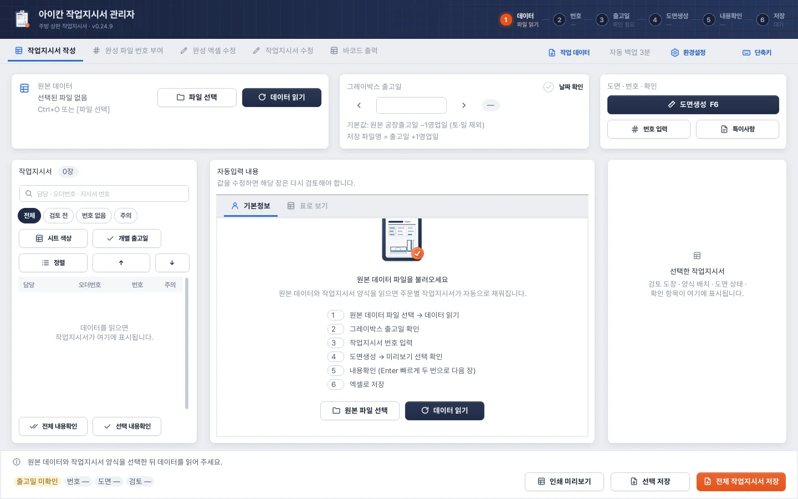
- 1원본 데이터파일 선택(Ctrl+O)으로 원본 엑셀을 고르고 데이터 읽기(F5)를 누릅니다.
- 2하루 작업 6단계원본 읽기 → 출고일 확인 → 번호 입력 → 도면생성 → 내용확인 → 엑셀 저장 순서입니다.
- 3진행 칩출고일·번호·도면·검토가 얼마나 끝났는지 늘 아래에 표시됩니다.
작업지시서 작성에서 원본 파일 선택 → 데이터 읽기.
그레이박스 출고일을 확인하고 날짜 확인을 체크합니다.
각 주문의 작업지시서 번호를 직접 입력하거나 번호 Excel로 업로드합니다.
도면생성을 실행합니다. 수기도면도 기본 조각까지는 생성됩니다.
필요한 작업만 도면 편집으로 열어 배치·표시를 고치고 적용합니다.
표와 도면을 확인하고 내용확인합니다. 필요한 경우 전체 내용확인을 사용합니다.
전체 작업지시서 저장 또는 선택 저장으로 Excel을 만듭니다. 인쇄는 인쇄 미리보기에서 진행합니다.
계속 작업하거나 동료에게 전달하려면 별도로 작업 데이터 → 작업 데이터 저장을 실행합니다.
주의 · 가장 중요한 저장 구분
Excel은 업무용 출력물이고, .ikanwork는 편집 상태를 이어갈 작업 파일입니다. 두 파일은 용도가 다릅니다.
CHAPTER 02
화면과 파일의 역할
5개 탭, 작업 데이터 메뉴, 저장 범위
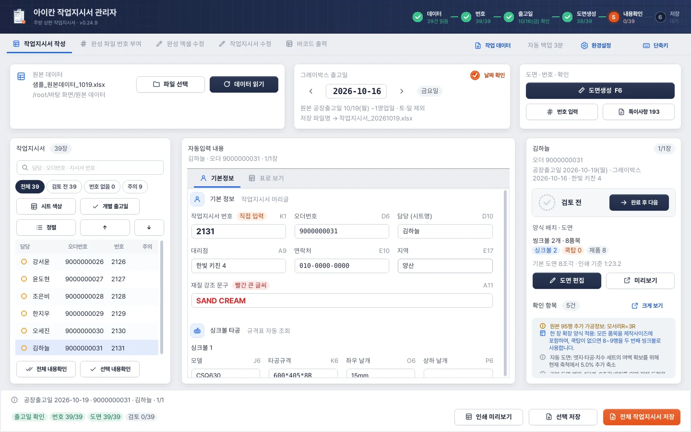
- 1단계 표시데이터 · 번호 · 출고일 · 도면생성 · 내용확인 · 저장 6단계가 얼마나 끝났는지 보여 줍니다. 단계를 누르면 그 일을 바로 실행합니다(번호 → 번호 입력 창, 도면생성 → 도면생성, 내용확인 → 다음 검토 전 장, 저장 → 전체 저장).
- 2작업 탭작업지시서 작성 · 완성 파일 번호 부여 · 완성 엑셀 수정 · 작업지시서 수정 · 바코드 출력. 어느 탭에서든 같은 작업 데이터를 씁니다.
- 3공통 메뉴작업 데이터(저장·이어하기·합치기), 자동 백업 상태, 환경설정, 단축키(F1).
- 4원본 데이터파일 선택(Ctrl+O) 후 데이터 읽기(F5). 읽은 파일 이름과 폴더가 표시됩니다.
- 5그레이박스 출고일‹ ›로 하루씩 옮기고 날짜 확인을 체크합니다. 아래에 저장될 파일 이름이 미리 나옵니다.
- 6도면 · 번호 · 확인도면생성(F6), 번호 입력(Ctrl+N), 특이사항 리포트(Ctrl+R).
- 7작업지시서 목록검색(Ctrl+F)과 필터(전체 · 검토 전 · 번호 없음 · 주의), 시트 색상, 개별 출고일, 순서 바꾸기.
- 8자동입력 내용기본정보와 표로 보기 두 가지로 봅니다. 값을 고치면 그 장은 다시 검토해야 합니다.
- 9검토 패널완료 후 다음(Enter 두 번), 도면 편집(Space 두 번), 미리보기, 확인 항목을 한곳에서 처리합니다.
- 10상태 줄지금 고른 장의 정보와 출고일 · 번호 · 도면 · 검토 진행 칩.
- 11저장인쇄 미리보기, 선택 저장(Ctrl+Shift+S), 전체 작업지시서 저장(Ctrl+S).
상단 작업 탭에서 업무를 선택합니다. 오른쪽에는 공통 메뉴 작업 데이터, 단축키, 환경설정이 있습니다.
| 화면 | 언제 사용하는가 | 주요 결과 |
|---|---|---|
| 작업지시서 작성 | 원본 데이터로 새 지시서를 만드는 업무 | 작업지시서 Excel, 작성 상태 |
| 완성 파일 번호 부여 | 이미 완성한 Excel의 번호만 다시 넣을 때 | K1 번호를 바꾼 새 Excel |
| 완성 엑셀 수정 | 저장된 Excel의 표·도면을 직접 고칠 때 | 수정한 새 Excel |
| 작업지시서 수정 | 주문 변경 전후 데이터를 대조해 기존 작성본에 반영할 때 | 비교 리포트, 검토한 수정안, 반영 결과 |
| 바코드 출력 | 바코드 PDF에 번호·가공 표시를 넣고 출력할 때 | 메인·뒷턱·Z 분할·표지 PDF |
어떤 파일을 저장해야 하나요?
| 파일 | 보관 내용 | 사용 목적 |
|---|---|---|
| 원본 데이터 Excel | 수주·제작 데이터의 출발점 | 다시 읽기, 주문 변경 비교, 바코드 품목 연결 |
| 작업지시서 Excel | 표·도면·시트 순서·시트 색상 등의 출력 결과 | 현장 전달, Excel에서 확인·편집, 완성 엑셀 수정 |
.ikanwork | 선택한 작성/완성 수정/수정 비교의 번호·표·도면·날짜·검토·초안 등 작업 상태 | 중간 저장, 다른 PC로 이동, 동료 작업 합치기 |
| 바코드 결과 PDF | 바코드에 실제 적용한 문구·번호·강조 | 바코드 결과 보관과 재출력 |
| HTML 변경 리포트 | 수정 전후 차이와 확인 사항 | 공유, 검색, 인쇄 |
참고 · 작업 데이터에 포함되지 않는 별도 결과
바코드 편집 결과는 PDF로 따로 저장합니다. 완성 파일 번호 부여 탭의 변경도 해당 탭에서 새 Excel로 저장하세요. .ikanwork 저장 옵션의 대상은 작성·완성 엑셀 수정·작업지시서 수정입니다.
CHAPTER 03
작업지시서 작성
원본 읽기, 날짜, 번호, 확인, Excel 저장
1. 원본 데이터 읽기
파일 선택으로 원본을 지정한 후 데이터 읽기를 누릅니다. 파일을 선택한 것만으로는 내용이 갱신되지 않습니다. 상단 상태와 목록의 담당·오더번호·작업 수를 확인하세요.
원본을 다시 읽으면 현재 작성 목록을 새 원본 기준으로 다시 만듭니다. 수동으로 고친 표·도면·번호가 있다면 먼저 작업 데이터를 저장합니다. 검색·필터가 켜져 있으면 읽은 작업 중 일부만 보일 수 있습니다.
2. 그레이박스 출고일 확인
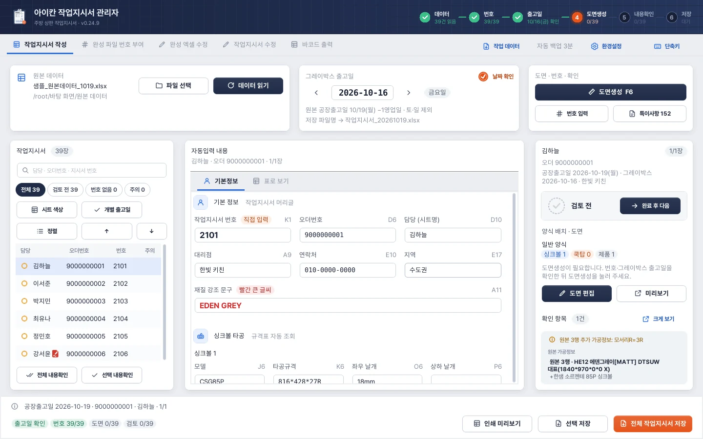
- 1날짜 확인출고일이 맞으면 체크합니다. 날짜를 바꾸면 체크가 풀립니다.
- 2출고일 고르기기본값은 원본 공장출고일 −1영업일(토·일 제외). ‹ ›로 하루씩 옮깁니다.
- 3저장 파일 이름출고일 다음 영업일 날짜로 파일 이름이 정해집니다.
- 4작업지시서 번호(K1)장마다 직접 넣거나 번호 입력(Ctrl+N)으로 한 번에 넣습니다.
- 5진행 확인번호 39/39, 출고일 확인이 끝나면 다음 단계인 도면생성이 켜집니다.
원본의 공장출고일은 시공일로 해석합니다. 그레이박스 출고일 기본값은 시공일 −1영업일입니다. 날짜를 직접 바꾸거나 양옆 화살표로 영업일 단위로 옮긴 뒤 날짜 확인을 체크합니다.
특정 주문만 날짜가 다르면 목록을 선택하고 개별 출고일에서 해당 날짜를 적용합니다. 개별 날짜가 없는 주문은 전체 그레이박스 출고일을 사용합니다.
작업지시서 상단의 연월 0.24.8
작업지시서 맨 위 A1의 26년 10월 같은 연월은 그 작업의 시공일(원본의 공장출고일)로 정합니다. 그레이박스 출고일이 아닙니다.
| 그레이박스 출고일 | 시공일 | 상단 연월 |
|---|---|---|
| 2026-10-30 | 2026-11-02 | 26년 11월 |
| 2026-11-30 | 2026-12-01 | 26년 12월 |
| 2026-12-31 | 2027-01-01 | 27년 1월 |
- 한 파일에 시공일이 여러 개면 작업지시서마다 그 시공 연월을 씁니다.
- 전체·개별 그레이박스 출고일을 바꿔도 시공일이 같으면 상단 연월은 그대로입니다. 표의 그레이박스 출고일과 저장 파일 이름 규칙도 그대로입니다.
- 이전 버전으로 저장한 Excel은 불러오기만으로 A1을 고치지 않습니다. 작성 데이터에서 다시 저장하거나 완성 엑셀 수정에서 시공 연월을 직접 바꿔 저장하세요.
주의 · 영업일 계산 범위
현재 날짜 계산은 토요일·일요일을 제외합니다. 공휴일·회사 휴무·물류 일정은 사용자가 확인해 직접 조정해야 합니다.
이 체험은 스크립트가 켜진 브라우저에서 동작합니다.
3. 작업지시서 번호 입력
번호는 사내 관리 기준에 따라 사용자가 넣습니다. 공통 접두사 No. 뒤의 내용만 입력하면 됩니다. 번호 일괄 입력 창, Excel 번호 업로드, 개별 입력을 사용할 수 있습니다. 자세한 방법은 번호 관리를 보세요.
4. 도면 생성과 내용확인
도면생성(F6)으로 기본 도형과 자동 가공 표시를 만듭니다. 필요한 작업은 도면 편집에서 수정합니다. 표·도면·날짜·번호를 확인하고 내용확인을 체크하거나 완료 후 다음을 사용합니다. 빠르게 Enter 두 번을 누르면 검토 완료 후 다음 검토 전 작업으로 이동합니다.
전체 내용확인은 여러 건을 일괄 확인 처리하는 기능입니다. 실제 내용을 먼저 검토한 뒤 사용하세요. 표나 도면을 고치면 다시 확인해야 할 수 있습니다.
5. Excel로 저장
전체 또는 저장할 목록을 선택합니다.
전체 작업지시서 저장 / 선택 저장을 누릅니다.
새 파일명과 저장 위치를 정합니다. 기본 파일명은
작업지시서_YYYYMMDD.xlsx이며 날짜는 그레이박스 출고일 +1영업일입니다.저장이 끝난 뒤 결과 파일과 완료 상태를 확인합니다.
저장 중 저장 취소를 누를 수 있습니다. 현재 Excel 처리 정리 때문에 즉시 멈추지 않을 수 있고, 파일 확정 단계에서는 취소가 제한될 수 있습니다. 취소/완료 표시가 나올 때까지 기다리세요.
참고 · 중복 오더번호 확인 0.24.9
이번에 저장할 작업지시서 안에 같은 오더번호가 둘 이상 있으면 중복 오더번호 확인 창이 한 번 뜹니다. 예는 중복을 포함해 그대로 저장, 아니요는 이번 저장만 취소합니다(목록과 작업 내용은 그대로). 자세한 기준은 인쇄 미리보기와 인쇄의 중복 오더번호 확인을 보세요.
참고 · 저장 전 확인
미적용 도면 초안, 필수값 오류, 지원 범위를 넘는 품목 등은 출력을 막거나 확인을 요구합니다. 수기도면 조립 미완료 작업은 확인창이 표시됩니다. 원본 또는 기존 파일을 덮어쓰기보다 새 파일명으로 저장하세요.
CHAPTER 04
표 내용 확인과 수정
기본정보, 표로 보기, 취소선과 도면 연동
기본정보와 표로 보기
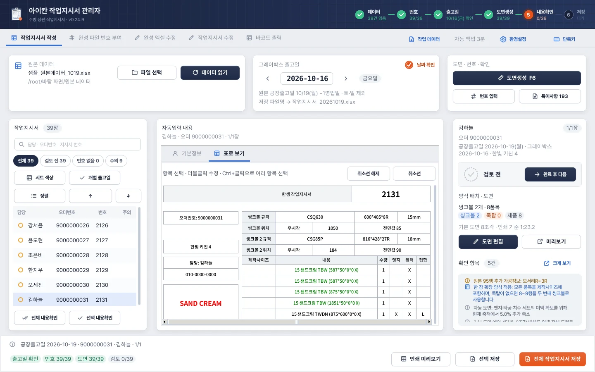
- 1표로 보기 탭기본정보 대신 작업지시서 모양 그대로 봅니다.
- 2취소선항목을 고르고 취소선 / 취소선 해제. Ctrl+클릭으로 여러 항목을 고릅니다.
- 3작업지시서 번호표에서도 더블클릭해 바로 고칠 수 있습니다.
- 4제작사이즈 표품목·수량·엣지·뒷턱·접합이 원본에서 자동으로 채워집니다. 고친 칸은 다시 검토합니다.
작성 화면의 자동입력 내용은 기본정보와 표로 보기로 확인합니다. 기본정보에서는 항목별 입력칸을, 표로 보기에서는 익숙한 작업지시서 상단 표와 비슷한 배치를 사용합니다. 긴 내용은 마우스 휠과 스크롤로 확인합니다.
| 영역 | 확인할 내용 |
|---|---|
| 기본 정보 | 담당·연락처·대리점·오더번호·지역·작업지시서 번호·재질 강조 문구 |
| 씽크볼 | 모델, 타공규격, 좌우/상하 날개, 우시작 등의 위치값, 전면값 |
| 쿡탑 | 제품 제목, 타공규격, 좌센터/우센터, 센터값, 전면값 |
| 제작사이즈 | 제품명·치수, 수량, 엣지, 접합, 뒷턱 유형과 왼쪽 특수표시 |
| 뒷턱 | 별도로 계산된 부착 뒷턱 치수. 전부 없으면 검정 X 한 번 표시 |
표에서 값 바꾸기
표로 보기에서 바꿀 칸을 더블클릭합니다.
내용을 입력하고 편집을 확정합니다.
자동 연동된 표와 도면을 다시 확인합니다.
제작사이즈 왼편의 붉은 특수입력에는 쿡탑·볼/씽크볼 모델, 벽체 엣지 방향, 기본값이 아닌 R값 등의 표시가 포함됩니다. 이 영역은 원본에서 유도된 정보이므로 해당 원본/연결 항목과 함께 확인합니다.
선택한 셀에 취소선 넣기 0.24.9
표로 보기에서 취소선을 넣을 셀을 마우스로 고른 뒤 취소선을 누릅니다. 고른 셀에만 파란 취소선이 그어집니다. 해제는 같은 셀을 고르고 취소선 해제를 누릅니다.
| 조작 | 결과 |
|---|---|
| 셀 클릭 | 그 셀 하나 선택 |
| Ctrl+클릭 | 떨어진 셀을 더 고르거나 선택 해제 |
| 마우스로 범위 드래그 | 드래그한 범위의 셀 선택 |
| 취소선 | 고른 셀에 파란 취소선 |
| 취소선 해제 | 고른 셀에 사용자가 넣은 취소선 해제 |
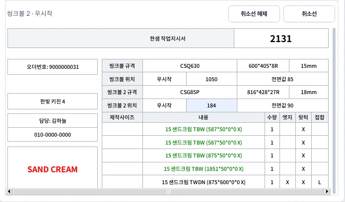
- 1고른 셀클릭으로 한 칸, Ctrl+클릭으로 더하기, 드래그로 범위를 고릅니다. 같은 줄의 다른 칸은 자동으로 함께 고르지 않습니다.
- 2취소선고른 칸에만 파란 취소선을 긋습니다.
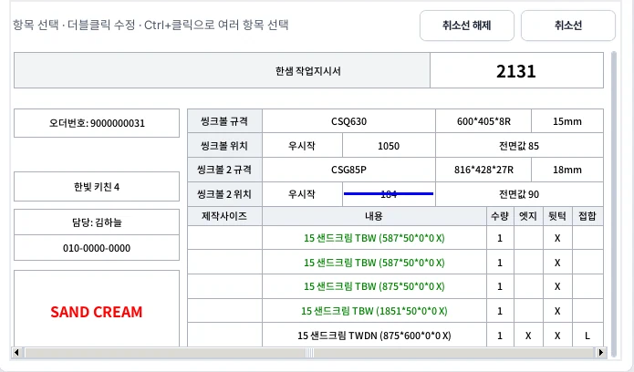
- 1취소선 칸원래 숫자 184는 지우지 않고 선으로 남깁니다.
- 2취소선 해제같은 칸을 고르고 누릅니다. 이 타공과 관련된 마지막 취소선까지 해제해야 도면에 다시 나옵니다.
도면과 연결되는 방식
- 씽크볼·쿡탑 관련 셀에 취소선을 넣으면 그 타공 세트가 도면에서 빠집니다. 표의 원래 숫자와 문구는 지우지 않고 선으로 남깁니다.
- 같은 타공의 여러 셀에 취소선을 넣었다면 그 타공과 관련된 마지막 취소선까지 해제해야 도면에 다시 나옵니다. 일부만 해제하면 계속 빠진 상태입니다.
- 취소하기 전 세트의 수동 위치·표시 조정은 보관됩니다. 규격·위치값이 그대로인 채 해제하면 그대로 복원되고, 취소 중에 표의 규격·위치값을 바꿨다면 바뀐 값으로 다시 계산합니다.
- 선택 셀 표시와 복원 자료는 작업 데이터에 저장되어 이어서 편집할 수 있습니다. 이 기능은 관리자 0.24.9 이상에서 쓰세요.
- 이전 파일의 행 전체 취소선은 불러오기만으로 셀 단위로 바뀌지 않습니다. 처음 셀별로 편집할 때 기존에 보이던 범위도 그대로 보존합니다.
X·999999 같은 불가능한 타공값은 지금처럼 자동으로 취소됩니다. 원문 수치를 남기고 관련 위치 항목 전체에 굵은 파란 취소선을 표시합니다. 자동 취소가 남아 있으면 사용자 취소선만 해제해도 타공이 복원되지 않습니다. 실제로 작업할 정상값인지 먼저 확인하세요. 수기도면 에디터에서 타공 세트를 지워 현장타공으로 처리할 때의 위치 행 취소 표시도 그대로입니다.
참고 · 서로 다른 두 가지 취소/삭제
현장타공 표시용 취소선과, 주문 변경 후 사라진 내용을 지우는 처리는 다릅니다. 작업지시서 수정으로 반영하는 정상 변경은 변경 후 값으로 쓰고, 공백이 된 항목은 깨끗하게 비웁니다.
복수 타공과 많은 품목
한 주문에 씽크볼 최대 2개, 쿡탑 최대 2개를 독립적으로 관리합니다. 추가 블록이 생기면 표를 조정해 제품 목록과 뒷턱을 아래로 이동합니다. 제작사이즈는 최대 11품목까지 표를 확장합니다. 이를 넘거나 셋째 쿡탑처럼 지원 범위를 벗어나면 리포트를 확인해 별도 조치합니다.
씽크볼 날개값이 한 개만 있거나 좌우·상하가 같은 경우 표로 보기와 보조창에서 좌우/상하 영역 가운데에 공통값으로 표시합니다.
CHAPTER 05
목록 관리
검색·필터·순서·색상·선택 삭제
찾기와 여러 개 선택
목록 검색창에서 담당·오더번호·작업지시서 번호로 찾습니다. Ctrl+F는 검색창으로 이동합니다. 전체 / 검토 전 / 번호 없음 / 주의 필터로 대상을 좁힙니다. Ctrl+클릭은 떨어진 항목, Shift+클릭은 범위 선택에 사용합니다.
시트 순서 바꾸기
작성과 완성 엑셀 수정 목록에서 선택한 작업을 ↑ / ↓로 이동합니다. 정렬을 누르면 별도 창에서 여러 개를 끌어서 옮기거나 맨 위/맨 아래로 보낼 수 있습니다.
정렬 기준은 담당·시트명 / 오더번호 / 작업지시서 번호 / 시트 색상이며 역순도 지원합니다. 기준 정렬 후 결과를 확인하고 순서 적용을 누릅니다. 처음 순서는 정렬창을 열 때의 순서로 되돌립니다. 목록의 순서는 저장·인쇄 순서에도 반영됩니다.
시트 색상
목록에서 대상을 선택하고 시트 색상을 누릅니다. 22가지 색과 색 없음을 선택할 수 있습니다. 목록의 색상 표시와 Excel 시트 탭 색으로 사용합니다. 재질명 강조색이나 도면의 엣지색과는 별개입니다.
작업지시서 선택 삭제 0.24.6
작업지시서 작성 목록에서 삭제할 항목을 한 개 또는 여러 개 선택합니다.
선택 삭제를 누르고 이름·오더번호를 확인합니다.
확인하면 현재 작성 목록에서 제거되고 이후 저장·인쇄 대상에서도 빠집니다.
원본 Excel과 이미 저장된 결과 파일은 유지됩니다. 원본을 다시 읽으면 항목이 다시 생성됩니다. 검색으로 숨겨진 다른 오더는 삭제하지 않으며, 옛 복수 페이지 주문은 해당 오더 전체를 지웁니다. 작성 인쇄 미리보기가 준비·인쇄 중이면 완료 후 삭제해야 하고, 열려 있는 이전 작성 미리보기는 닫힙니다.
전체 항목을 삭제한 빈 작성 상태도 작업 데이터로 저장·복원할 수 있습니다. 이 빈 목록만 담은 파일은 0.24.6 이상에서 엽니다.
참고 · 삭제 기능의 위치
여기의 선택 삭제는 작성 목록에서 사용자가 불필요한 작업을 빼는 기능입니다. 오더차이리스트를 통한 주문 전체 삭제는 작업지시서 수정의 검토·반영 절차를 사용합니다.
CHAPTER 06
작업지시서 번호 관리
직접 입력, 일괄 입력, Excel 매칭, 완성 파일 번호 부여
번호의 기준
작업지시서 번호는 항상 K1, 오더번호는 D6입니다. 둘은 다른 번호입니다. 프로그램이 사내 작업지시서 번호를 임의로 정하지 않으며 No.는 공통 접두사로 붙입니다.
작성 중 번호 일괄 입력
작성 화면에서 번호 일괄 입력(Ctrl+N)을 엽니다. 주문별 번호를 입력하고 적용합니다. Enter 또는 ↓는 다음 칸, ↑는 이전 칸으로 이동합니다. 휠로 긴 목록을 스크롤할 수 있습니다.
아직 번호를 정하지 않았다면 전체 또는 일부 대상을 선택해 입력예정을 적용합니다. 출력에는 No. 입력예정으로 표시되므로 최종 번호를 확인해야 합니다.
번호 Excel 양식으로 매칭
번호 매칭 양식 다운로드로 빈 Excel 양식을 저장합니다.
오더번호 / 작업지시서 번호를 기입합니다. 공통 No. 접두사를 반복해서 적을 필요가 없습니다.
번호 Excel 업로드로 올립니다.
중복을 뺀 일치 건수, 대상에 없는 오더, 번호 미제공, 중복 행 수를 확인합니다.
저장하거나 작성 결과에 적용합니다. 번호가 제공되지 않은 주문은 기존값을 유지합니다.
0312966489와 312966489는 같은 주문으로 연결합니다. 숫자로만 된 업로드 번호도 불필요한 앞 0을 정리합니다. 같은 주문에 서로 다른 번호가 중복되면 확인이 필요합니다.완성 파일 번호 부여 탭
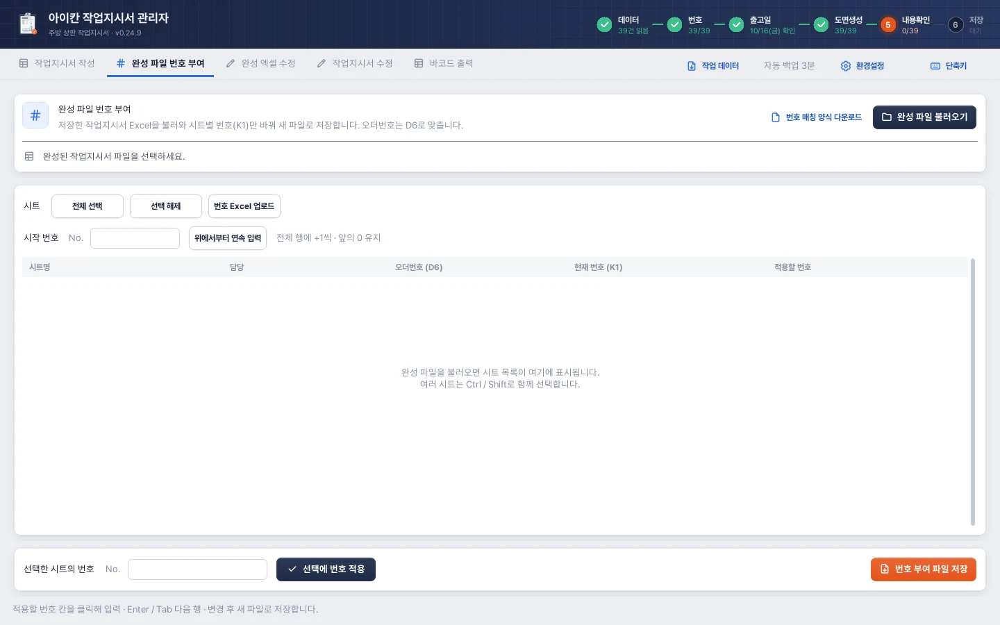
- 1양식과 파일번호 매칭 양식을 받아 채우거나, 저장해 둔 작업지시서 Excel을 완성 파일 불러오기로 엽니다.
- 2시트 고르기전체 선택 · 선택 해제 · 번호 Excel 업로드.
- 3시작 번호시작 번호를 넣고 위에서부터 연속 입력하면 1씩 늘며 채워집니다. 앞의 0은 그대로 둡니다.
- 4시트 목록시트명 · 담당 · 오더번호(D6) · 현재 번호(K1) · 적용할 번호.
- 5선택한 시트에 적용고른 시트에 같은 번호를 한 번에 넣습니다.
- 6번호 부여 파일 저장번호만 바꾼 새 파일로 저장합니다. 원본 파일은 그대로입니다.
저장된 Excel의 번호만 바꾸는 전용 화면입니다. 원본 데이터 없이 완성 파일의 D6와 K1로 작업합니다.
완성 파일 불러오기로 작업지시서 Excel을 엽니다.
목록의 적용할 번호 칸을 클릭해 바로 입력합니다. Enter/Tab은 다음 행, Shift+Tab은 이전 행, Esc는 현재 입력 취소입니다.
여러 시트에 같은 값을 넣으려면 선택 후 선택에 번호 적용을 사용합니다. 번호 Excel 업로드도 가능합니다.
시작 번호 → 위에서부터 연속 입력을 누르면 전체 목록의 맨 위부터 +1씩 채웁니다. 직접 지정한 연속 번호의 앞 0은 유지합니다.
번호 부여 파일 저장으로 새 Excel을 저장합니다. 이 화면에는 입력예정 일괄 버튼이 없습니다.
참고 · 연속 입력의 적용 범위
완성 파일 번호 부여의 연속 입력은 전체 행에 적용됩니다. 특정 범위만 바꾸려면 직접 입력/번호 Excel 업로드를 사용하고, 저장 전 적용할 번호 열을 확인하세요.
CHAPTER 07
도면 자동생성
생성 항목, 배율, 수량, 수기도면, Z 조각
생성되는 기본 도면
제작사이즈의 항목을 원래 가로·세로 방향을 유지한 사각형으로 만들고 치수를 붙입니다. 수량이 2개이면 조각도 2개입니다. 기본 도형은 흰색 채움이며 상판 치수는 맑은 고딕 굵은 18pt, 보조 가공 수치는 기본 16pt를 사용합니다.
도면은 출력 표 아래의 한 장 영역 안에 들어가도록 배치합니다. 품목이 많으면 전체 세트 사이에 여백을 두면서 배율을 낮춥니다. 품목별로 임의 회전해서 끼워 넣지 않습니다.
배율과 아주 얇은 조각
기본 비율은 1:18을 바탕으로 3% 보정한 기준(1:18.54)입니다. 기본 → 5% → 10% → 15% → 20% → 25% → 28% 축소를 시도하고, 필요하면 1%씩 추가 축소합니다. 많은 축소가 필요했던 작업은 주의 내용을 확인하세요.
지나치게 얇은 조각은 식별을 위해 짧은 면만 완만하게 늘려 보입니다. 긴 면의 1/4과 엣지 두께 기준 상한 안에서 보정하며, 50과 100을 같은 두께로 평탄화하지 않습니다. 표와 숫자에 쓰인 실제 제작 치수는 유지됩니다. 비율 보정된 그림을 자로 재어 제작 치수로 사용하지 마세요.
함께 생성하는 표시
| 표시 | 자동 처리 |
|---|---|
| 일반/부분 엣지 | 엣지칸과 코드별 규칙으로 하늘색·보라색 띠를 붙입니다. TPUB·TPUBW 접합 예외는 다음 장 참고. |
| 씽크볼·쿡탑 | 상판과 원본 행이 검증된 실제 가공 대상을 규격·위치·전면값대로 부착합니다. 기본 수정 잠금 상태입니다. |
| 부착 뒷턱 | 해당 상판에 띄운 초록 엣지와 필요한 뒷턱엣지 모서리 표시를 만듭니다. |
| 하부 레그룸 (X) | 해당 조각 안에 무릎공간 X를 표시합니다. |
| 하부 레그룸 연마(Y) | 일반도면에는 300 하부마감, 수기도면에는 붉은 하부마감 있음 문구를 표시합니다. |
| 추가타공·추가재단 | 원본 AJ·AK의 숫자를 도면 우측 상단에 표시합니다. |
| 복수 재질 | 표의 재질별 강조색과 같은 색의 영문명을 해당 도형 안에 표시합니다. |
| Z 구분자 | AO 가공정보의 명확한 두 분할 깊이가 원래 세로값과 맞을 때 수량당 두 조각으로 나눕니다. 모호하면 확인 필요로 안내합니다. |
수기도면(도면참조 Y)
수기도면도 같은 방식으로 기본 조각을 생성하지만 자동 엣지는 붙이지 않습니다. 유효한 씽크볼·쿡탑, 무릎공간/하부마감 안내를 먼저 표시하고, 작업자가 별도 수기도면을 보며 재배치·조립합니다.
목록의 이름 오른쪽 아이콘은 조립 전 붉은색, 조립 완료 후 초록색으로 구분합니다. 출력 표 아래에도 수기도면 표시를 넣으며, 해당 시트의 인쇄영역 밖 오른쪽 재료는 유지합니다.
주의 · 자동생성과 다시생성
저장된 수동 도면은 열기만으로 초기화하지 않습니다. F6를 반복해도 이미 생성한 도면은 보존될 수 있습니다. 작성 작업을 새 자동 규칙으로 전부 다시 만들려면 작업 데이터를 먼저 별도로 저장 → 원본 데이터 재읽기 → 날짜·번호 확인 → 도면생성 순서로 진행하세요. 에디터 초기화는 그 작업에 보관된 자동 배치로 돌아가는 기능이므로, 업데이트된 규칙으로 새로 만드는 것과 구분합니다.
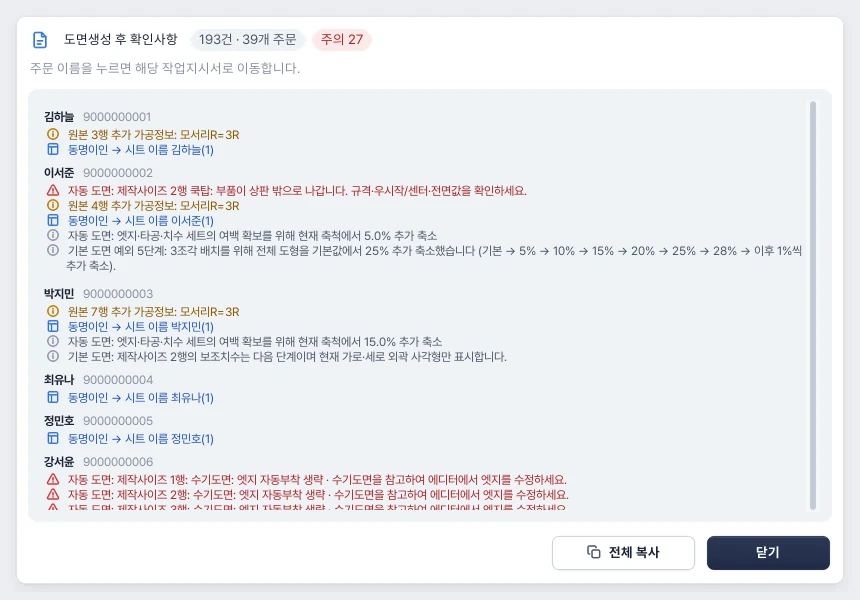
- 1건수와 주의전체 확인 건수와 주문 수, 꼭 고쳐야 할 주의 건수.
- 2주문별 묶음담당과 오더번호를 누르면 해당 작업지시서로 이동합니다.
- 3표시 색빨강 ⚠는 고쳐야 할 것, 주황은 원본 가공정보 안내, 회색은 자동 축소 같은 참고 사항입니다.
- 4전체 복사목록 전체를 복사해 메신저나 메모에 붙여 넣을 수 있습니다.
CHAPTER 08
도면 에디터 기본 조작
선택·이동·크기·회전·맞춤·그룹·잠금
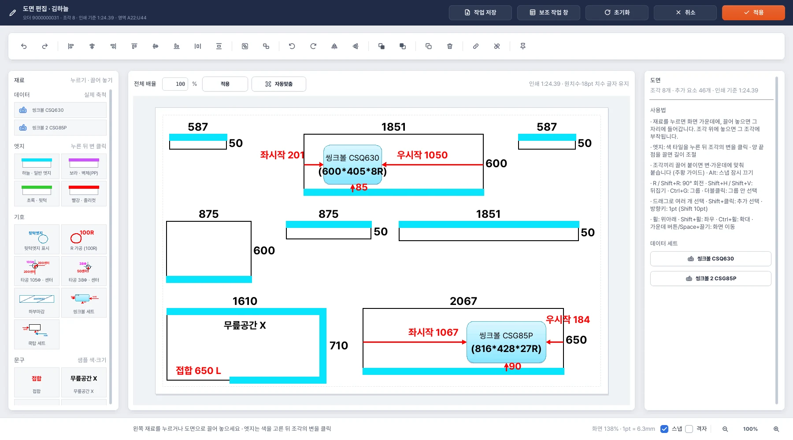
- 1재료데이터 세트(씽크볼·쿡탑), 엣지 색, 기호, 문구. 누르면 화면 가운데에, 끌어 놓으면 그 자리에 들어갑니다.
- 2도구 막대실행 취소·다시 실행, 정렬과 간격 맞춤, 회전·뒤집기, 앞뒤 순서, 복제·삭제, 그룹 묶기·풀기.
- 3전체 배율도면 전체 크기를 % 로 바꾸거나 자동맞춤으로 영역에 맞춥니다.
- 4도면조각을 끌어 옮기고, 엣지는 색 타일을 고른 뒤 조각의 변을 클릭합니다. 하늘색 = 일반 엣지.
- 5도면 정보 · 사용법조각·추가 요소 수, 인쇄 기준 축척, 조작 요령, 이 장의 데이터 세트.
- 6저장과 적용작업 저장(초안), 보조 작업 창, 초기화, 취소, 적용. 적용을 눌러야 작업지시서에 반영됩니다.
- 7화면 배율 · 스냅화면 확대 비율과 1pt 길이, 스냅·격자 켜기, 확대·축소.
열기와 적용
현재 작업을 선택하고 도면 편집 또는 빠르게 Space 두 번으로 엽니다. 완성 엑셀 수정·수정안 검토에서도 현재 도면을 열 수 있습니다. 편집기는 독립된 사본을 다루므로 마무리할 때 적용 또는 빠르게 Enter 두 번을 눌러야 원래 작업에 반영됩니다.
상단은 되돌리기·맞춤·그룹·회전 도구, 왼쪽은 재료, 가운데는 도면, 오른쪽은 선택한 오브젝트의 옵션입니다. 재료나 옵션 패널의 빈 바탕에서도 휠 스크롤을 사용할 수 있습니다.
선택과 이동
| 조작 | 결과 |
|---|---|
| 클릭 | 오브젝트 또는 세트 선택 |
| 빈 공간에서 드래그 | 영역 안의 여러 오브젝트 선택 |
| Shift+클릭 | 선택에 추가/제외 |
| 그룹 더블클릭 | 그룹 안 요소를 개별 선택 |
| Esc | 편집/도구를 끝내거나 그룹 밖으로 이동 |
| 드래그 | 이동. 스냅을 켜면 변·중앙·모서리에 가이드가 나타남 |
| Alt를 누르고 드래그 | 해당 이동에서 스냅을 잠시 해제 |
| 방향키 / Shift+방향키 | 1pt / 10pt 단위 미세 이동 |
연동된 가공 수치는 드래그 배치 시 정수 mm 기준으로 맞춥니다. 화면 위치의 pt와 실제 제작 mm는 단위가 다릅니다. 정확한 값을 지정할 때는 오른쪽의 해당 mm 항목을 사용합니다. 졸리컷의 1.5mm 보정은 소수 예외입니다.
크기·회전·뒤집기
선택한 도형 또는 다중 선택의 핸들로 크기를 조정하고, 회전/뒤집기를 사용합니다. 오른쪽 위치·크기, 회전·뒤집기에서 숫자를 직접 입력할 수 있습니다. R은 오른쪽 90°, Shift+R은 왼쪽 90°, Shift+H/Shift+V는 좌우/상하 뒤집기입니다.
상판 자체의 가로·세로 숫자는 회전 후 해당 변의 중앙에서 읽기 바른 방향을 유지합니다. 씽크볼·쿡탑과 그 부속 치수는 세트의 회전·뒤집기를 함께 따릅니다.
맞춤과 그룹
여러 요소를 선택하고 왼쪽·가운데·오른쪽·위·중간·아래 맞춤을 사용합니다. 가로/세로 간격 같게는 이동 가능한 요소 3개 이상이 필요합니다. 잠긴 요소가 있으면 맞춤의 기준으로 사용할 수 있습니다.
그룹(Ctrl+G)은 여러 독립 요소를 함께 이동하도록 묶습니다. 그룹 해제는 Ctrl+Shift+G입니다. 조각에 붙여 함께 움직여야 하는 가공 표시는 조각에 부착을 사용하고, 독립 이동하려면 부착 해제를 사용합니다.
잠금과 레이어
제자리 잠금(Ctrl+L)은 이동·크기·회전·삭제를 막아 조립한 배치를 보호합니다. 바탕 조각을 잠그고 그 위에 재료를 붙일 수 있습니다. 자동 씽크볼·쿡탑의 수정 잠금은 별도 가공 세트 잠금입니다.
바탕 상판은 항상 맨 아래, 하부마감은 그 바로 위 순서를 유지합니다. 다른 요소는 맨 앞으로 / 맨 뒤로(Ctrl+]/Ctrl+[)로 바꿉니다.
복사·잘라내기·되돌리기
Ctrl+C/Ctrl+V/Ctrl+X와 복제 Ctrl+D를 지원합니다. 다만 원본 제작 수량과 대응하는 상판 조각 자체는 임의 복사·복제·삭제할 수 없습니다. 실제 상판 수량은 표/원본을 기준으로 고칩니다.
Ctrl+Z로 되돌리고 Ctrl+Y로 다시 실행합니다. 글자 입력 중에는 글자 편집에 해당하는 되돌리기를 사용합니다.
CHAPTER 09
확대·전체 배율·보조 정보창
화면 확대와 실제 배치 배율의 차이, 양방향 강조
작성 화면의 도면 미리보기
작성 화면 오른쪽 미리보기는 저장될 도면을 크게 확인하는 별도 창입니다. 번호·표·여백까지 포함한 실제 Excel 한 장을 확인하려면 하단 인쇄 미리보기를 사용합니다. 도면만 보는 창과 실제 인쇄 페이지를 보는 창을 구분하세요.
화면 보기만 바꾸기
휠은 세로, Shift+휠은 가로 스크롤입니다. Ctrl+휠 또는 확대/축소 버튼으로 화면을 키웁니다. Ctrl+0은 전체 맞춤이며, 가운데 마우스 버튼 또는 Space를 누른 채 끌어 화면을 이동합니다.
격자를 켜면 배치 보조 격자를 표시하고 끌기를 5pt 단위로 맞춥니다. 스냅 체크는 변·중앙에 붙는 가이드를 켜고 끕니다.
출력 도면 전체 배율 바꾸기
에디터의 전체 배율 %에 값을 넣고 적용하면 도면 세트 전체를 실제로 키우거나 줄입니다. 자동맞춤은 도면 영역 안으로 맞추는 기능입니다. 화면 확대와 달리 출력 배치가 바뀝니다. 실제 mm 표기값은 유지됩니다.
너무 작은 요소·큰 요소가 생기거나 영역 밖으로 나가면 배율 조정/적용이 거절됩니다. 긴 문구와 바깥 요소를 먼저 안으로 정리하세요.
보조 정보창
에디터의 별도 보조창은 작업지시서 상단 표, 제작사이즈, 왼쪽 붉은 특수표시, 원본 AO 가공정보를 함께 보여줍니다. 씽크볼·쿡탑도 익숙한 표 형태로 확인합니다. 비어 있는 항목은 공백이며 수량·엣지·접합·뒷턱은 가운데 정렬합니다.
상판 위에 마우스를 올리면 해당 제작사이즈와 가공정보가 강조됩니다. 반대로 보조창의 목록에 마우스를 올리면 연결된 도형·정보가 강조됩니다. 노란 강조는 바탕 조각에 옅게 표시되며 출력물에는 저장되지 않습니다.
하부 레그룸 연마(Y)는 가공정보에서 붉은 굵은 글씨로, 수기도면은 별도 붉은 문구로 표시합니다.
두 모니터에서 사용
편집기와 보조창을 원하는 모니터로 옮기면 다음에도 위치를 기억합니다. 보조창의 나란히는 보조창이 놓인 모니터 기준으로 정렬합니다. 보조창은 아래 내용까지 보이도록 크기를 맞추고 화면을 넘는 경우 스크롤합니다. 사진/PDF 수기도면 자체는 별도 자료로 열어 참고하세요.
CHAPTER 10
엣지·부분엣지·뒷턱
자동 규칙과 수동 부착·길이·띄움 조정
색의 의미
- 하늘색 · 일반 엣지
- 보라색 · 벽체 엣지
- 초록색 · 부착 뒷턱
- 빨강 · 졸리컷
일반도면 자동 엣지 기준 0.24.9 기준
| 대상 | 자동 부착 위치 |
|---|---|
| 일반 상판 공백/X | 정방향 아랫면(전면부). 엣지 L이면 아래+왼쪽, R이면 아래+오른쪽, B/LR이면 아래+좌우. |
| DTS로 시작 | 일반도면은 4면. 수기도면은 자동 엣지 생략. |
| TBW | 뒷턱 자체 파츠이므로 위쪽 하늘색 한 번. |
| PP로 시작하는 벽체 | 원본 T열 있음/없음과 U열 방향을 보고 보라색. 공백/없음은 생략. 표에는 있음/없음, 방향은 왼쪽 붉은 특수표시. |
| TPUB·TPUBW | 상·하는 유지. 접합 L→오른쪽, R→왼쪽, B→측면 없음. 접합 공백/X이면 기존 엣지칸·기본 측면(공백/X는 왼쪽). |
| 그 외 TPUB 계열 | 엣지칸/기본값 기준. 공백/X는 상·하·왼쪽. 위의 정확한 두 코드에만 접합 예외 적용. |
| 수기도면 Y | 코드와 무관하게 자동 엣지 생략. 작업자가 참고 도면대로 부착. |
TPUB·TPUBW 외의 상판에서는 접합 L/R 때문에 측면을 임의로 추가하거나 뒤집지 않습니다. 명시된 엣지 방향을 사용합니다. 명시적인 엣지 ‘없음’ 등은 해당 코드의 생략 규칙을 따릅니다.
부분엣지 자동 해석
예를 들어 폭 2000에서 끝이 700 R이면 전면 오른쪽 700mm를 비우고 나머지에 엣지를 합니다. 700 L이면 왼쪽 700mm를 비웁니다. (2000*740*0*700 X)처럼 네 번째 수치가 있고 끝 X이면 표의 접합 L/R을 빈 구간 방향으로 읽습니다. 부분엣지의 빈 방향과 다른 변의 엣지 부착은 각각 따로 판단합니다.
접합 B는 양쪽 접합이며 Bottom의 뜻이 아닙니다. 명시된 부분엣지 길이를 무시하는 지시는 아닙니다.
이 체험은 스크립트가 켜진 브라우저에서 동작합니다.
에디터에서 엣지 붙이기
왼쪽 엣지 재료에서 색을 고릅니다.
상판의 원하는 변을 클릭합니다. Shift+클릭은 계속 붙이기, Esc는 도구 종료입니다.
양 끝의 점을 끌거나 오른쪽 접합 L / 길이 / 접합 R의 mm 값을 바꿉니다.
변 전체는 전체 길이로, 시작 ↔ 끝은 같은 길이를 반대 끝 기준으로 옮깁니다.
남은 빈 부분에는 접합 수치 L/R 문구가 조각 안쪽 변 가까이에 자동 배치됩니다. 숫자를 바꾸면 엣지 길이를 다시 계산합니다. 두 엣지가 모서리에서 만나면 띠가 끊기지 않게 이어집니다.
띄운 엣지와 부착 뒷턱
초록 엣지는 상판과 띄워 놓는 용도로 사용합니다. 드래그와 오른쪽 띄움 mm로 조정하며 기본 40mm 간격을 사용합니다. 자동 부착 뒷턱은 유효한 부착 뒷턱 대상에만 생성되고, TB 자체 파츠·TPUB·N 포함·수기도면은 제외합니다.
가로 부착 뒷턱은 위쪽, 코너의 추가 세로 뒷턱은 하늘색 엣지가 없는 좌우 변에 붙입니다. 둘 다 비어 있으면 왼쪽, 둘 다 하늘색이면 확인 필요로 안내합니다. 하늘색과 같은 구간을 중복하지 않습니다.
초록 끝과 하늘색 끝이 같은 모서리에서 만나면 윤곽 원과 뒷턱엣지 표시가 생깁니다. 끝점에 맞춰 이동하며 조건이 없어지면 함께 정리됩니다.
CHAPTER 11
하부마감·졸리컷·문구와 기호
깊이와 부분 길이, 치수 보정, 글자 편집
하부마감
재료의 하부마감을 상판 가까이 끌면 가장 가까운 변에 붙는 가이드를 보여줍니다. 놓으면 긴 방향이 해당 변에 맞고, 테두리를 가리지 않도록 안쪽에 배치됩니다. 클릭으로 만든 뒤 이동해 붙일 때도 가이드를 사용합니다.
300 하부마감의 300은 세로 폭(깊이) 300mm입니다. 오른쪽 mm 값을 바꾸면 실제 상판 비율에 맞춰 폭과 문구가 다시 적용됩니다. 긴 방향은 시작 여백/길이/끝 여백과 핸들로 줄여 부분 하부마감으로 만들 수 있습니다. 변 전체로 되돌릴 수 있습니다.
일반도면의 하부 레그룸 연마(Y)는 300 하부마감을 자동 배치합니다. 실제 깊이보다 300이 크면 확인 안내합니다.
| 자동생성 상황 | 하부마감 위치 |
|---|---|
| 그 상판에 씽크볼 또는 쿡탑 세트가 실제로 설치됨 0.24.9 | 위쪽(상단) 변 |
| 설치된 타공 없음 | 기본 아래변. 아래에 부분엣지 접합이 있거나, 아래 엣지가 없고 위에 엣지가 있으면 위변 |
| 수기도면의 하부 레그룸 연마 | 지금처럼 붉은 하부마감 있음 문구 표시 |
표에 타공 정보가 있어도 현장타공·취소로 실제 세트가 설치되지 않았으면 ‘설치됨’으로 보지 않습니다. 이미 저장한 수동 도면은 열기만으로 바뀌지 않고, 새로 생성하거나 다시 생성할 때 적용됩니다. 다시 생성하기 전에 지워질 수동 편집이 있는지 확인하세요.
졸리컷
빨강 띠를 변에 붙이면 1MM졸리컷 붉은 굵은 문구와 띠를 잇는 직선이 표시됩니다. 띠 끝의 표시 위치는 졸리컷 표시 반대쪽 또는 문구 드래그로 바꿉니다. 한 띠에 양쪽 문구를 중복하지 않습니다.
가공 보정은 면당 1.5mm입니다. 표의 원치수는 두고 도면에 표시되는 관련 치수만 바꿉니다. 예: 900×892에서 해당 졸리컷 방향에 따라 892가 890.5로 표시될 수 있습니다. 졸리컷의 소수 .5는 정상적인 보정값입니다.
같은 졸리컷 표시 글자들을 다중 선택해 합칠 수 있습니다. 문구는 하나만 남고 연결선은 각 띠로 모입니다. 합친 표시의 옵션에서 표시 나누기로 되돌립니다.
기호·센터 화살표
R가공 100, 뒷턱엣지 등의 기호는 모서리와 변 중앙에 스냅됩니다. 파란 센터 화살표는 연결한 상판과 길이에 맞춰 수치를 계산하며, 오른쪽 수치를 바꾸면 길이가 재조정됩니다. 일반 선은 시작/끝 화살표 켜기와 방향 바꾸기를 지원합니다.
내용입력 문구
문구 재료의 내용입력 · 빨강/검정/보라/파랑은 기본 맑은 고딕 18pt 굵게입니다. 클릭하면 가운데에 생성되고 드래그하면 놓은 자리에 생성됩니다. 문구를 더블클릭해 화면에서 바로 수정합니다.
- Enter: 글자 편집 완료 · Shift+Enter: 줄바꿈 · Esc: 글자 편집 취소.
- 오른쪽 글자 입력칸에는 숫자와 일반 문자를 자유롭게 넣습니다. (H)/(W) 버튼으로 표시를 붙일 수 있습니다.
- 폰트 크기·굵게·정렬·색·선 등을 선택 요소에 맞춰 바꿉니다.
- 자동 배치된 치수 문구도 선택해 수동 이동할 수 있습니다. 위치만 바꾸려는 경우 실제 mm 값 대신 문구를 이동하세요.
CHAPTER 12
씽크볼·쿡탑 자동적용과 계산기
상판 연결, 위치, 규격, 센터 전환, 잠금
자동생성된 세트 수정하기
자동으로 붙인 씽크볼·쿡탑은 기본 수정 잠금 상태입니다. 세트를 선택하고 오른쪽 수정 잠금을 해제한 뒤 이동·규격·정보를 고칩니다. 잠긴 상태에서는 실수로 이동·삭제하거나 문구를 바꾸지 못하게 보호합니다.
상판 선택 후 한 번에 생성
대상 상판 조각을 선택합니다.
오른쪽 계산기 상단의 씽크볼 자동적용 또는 쿡탑 자동적용을 누릅니다.
그 상판에 배정된 원본 제품으로 규격·위치·전면값을 계산해 배치합니다.
코드와 가공 수치, 실제 상판과의 연결을 확인합니다.
다른 상판에 배정된 제품을 적용하면 이 상판에 해당하는 씽크볼이 아닙니다. 같은 경고로 막습니다. 배정된 제품이 없으면 자동적용할 수 없습니다. 같은 코드가 반복되어도 원본 행을 기준으로 각각 연결합니다.
좌시작 계산기
| 종류 | 계산식 | 예시 |
|---|---|---|
| 씽크볼 | 상판 총길이 − 우따내기(우시작) − 씽크볼 가로 | 상판 길이와 해당 규격표 가로값, 원본 우시작을 사용 |
| 쿡탑 · 우센터 | 상판 총길이 − 우센터 − 쿡탑 가로÷2 | 1640 − 1190 − 560÷2 = 좌시작 170 |
| 쿡탑 · 좌센터 | 좌센터 − 쿡탑 가로÷2 | 450 − 560÷2 = 좌시작 170 |
상판 길이는 선택 조각에서 제안하고, 코드 선택 시 규격·위치·전면값을 제안합니다. 계산으로 값을 확인하고 적용으로 배치합니다. 수기 계산(코드 없음)은 값 계산만 하며 새 타공 세트를 임의로 자동 생성하지 않습니다.
위치와 규격 수정
상판 위로 끌면 좌시작·우시작·아래 전면값 화살표를 해당 변에 붙이는 가이드를 보여줍니다. 배치 후 오른쪽의 실제 mm 수치를 바꾸면 위치와 화살표가 함께 계산됩니다. 가공 세트의 가로·세로 규격도 상판의 실제 치수와 표시 비율에 대응합니다.
쿡탑은 표의 좌센터/우센터 기준으로 파란 센터 화살표를 만듭니다. 센터 화살표나 문구를 선택하고 좌센터로 전환 / 우센터로 전환을 누르면 본체 위치를 유지하고 반대쪽 기준으로 계산합니다. 상판 1640에서 좌센터450↔우센터1190입니다.
코드명·규격 표시
세트 옵션의 정보 표기에서 다음 항목을 중복 선택할 수 있습니다.
- 코드명: 씽크볼/쿡탑 이름 옆에 붙입니다. 수기로 수정할 수 있습니다.
- 사이즈 규격:
(800*400*14R)처럼 굵은 괄호 문구를 아래 중앙에 붙입니다. 수기 수정 가능합니다. - 타사씽크볼: 본체 이름을 타사씽크볼로 바꿉니다.
한 종류가 여러 개이면 코드·규격을 함께 표시해 구분합니다. 하나뿐인 씽크볼은 기본 이름을 씽크볼로 표시합니다. 좌우시작 문구는 주인 화살표와 본체 가까이에 배치하고, 겹치는 문구는 직접 이동해 마무리할 수 있습니다.
현장타공과 미등록 규격
정상 계산된 좌시작 또는 우시작이 30mm 미만이면 해당 세트를 자동 배치하지 않고 쿡탑 좌시작 30미만 현장타공 등의 안내 문구를 만듭니다. 정확히30mm는 이 기준으로 제외하지 않습니다. X·불가능한 수치로 취소된 타공도 자동 배치하지 않습니다.
미등록 규격은 원본 정보를 확인하고 사용자가 만든 도면을 검토합니다. 표 수정 시 규격이 없다는 이유만으로 수동 도면을 지우거나 반복 경고로 묶지 않습니다. 존재하지 않는 규격을 자동 추정해서 적용한 것으로 보지 마세요.
CHAPTER 13
편집 마무리·초안·출력 형태
적용과 중간 저장, 초기화, 수기도면 완료
적용 / 작업 데이터 저장 / 초기화
| 명령 | 효과 |
|---|---|
| 적용 · Enter 두 번 | 편집 내용을 현재 작업에 반영하고 편집기를 닫습니다. 영역 밖 요소가 있으면 먼저 수정해야 합니다. |
| 작업 저장 · 에디터 Ctrl+S | 현재 편집을 초안으로 보관하고 작업 데이터 저장 옵션을 엽니다. 적용과 다릅니다. |
| 초기화 | 해당 에디터의 자동/기준 배치로 돌아갑니다. 추가한 엣지·기호·문구 등이 교체될 수 있고, 에디터 되돌리기를 사용할 수 있습니다. |
| 닫기/취소 | 적용하지 않은 변경이 있으면 버릴지 확인합니다. |
초안이 남아 있으면 Excel 저장·인쇄 미리보기·표 수정 등이 적용을 요구할 수 있습니다. 해당 도면을 다시 열어 초안을 확인하고 적용한 뒤 진행합니다.
수기도면 조립 완료
수기도면을 적용할 때 조립 완료 여부를 묻습니다. 예는 조립 완료, 아니요는 미완료로 적용합니다. 미완료 아이콘은 붉은색이며 저장/인쇄 시 다시 확인할 수 있습니다.
수기도면에서 설치된 씽크볼·쿡탑을 제거해 적용하면 현장타공 의미로 연결된 표의 위치 항목 전체에 취소선을 반영합니다. 삭제하려면 자동 세트의 수정 잠금을 먼저 해제해야 합니다.
Excel에서의 도형
내보낸 Excel에는 시트 보호를 걸지 않으며, 도형을 선택·편집할 수 있습니다. 도형세트(상판+치수), 엣지, 하부마감, 씽크볼, 쿡탑은 용도별 그룹으로 내보냅니다. 같은 상판에 씽크볼·쿡탑이 함께 있으면 표시선을 가리지 않도록 본체와 치수·화살표 그룹을 나눌 수 있습니다.
일반 작업지시서는 인쇄영역 중심으로 정리하며 계산용 X5:AB19 표와 수식은 유지합니다. 수기도면 시트에는 오른쪽 재료도 유지합니다. 이 인쇄영역 밖 요소를 한 장 출력에 포함시키라는 뜻은 아닙니다.
CHAPTER 14
완성 엑셀 수정
이미 저장한 파일의 표·도면 직접 편집과 통합
완성 엑셀 수정은 이미 만들어진 작업지시서 Excel을 여는 화면입니다. 주문 변경 데이터를 대조하는 작업지시서 수정과 구분하세요.
기본 사용 순서
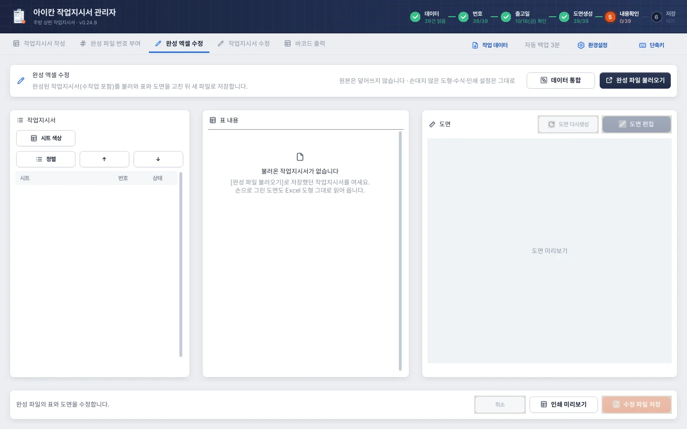
- 1불러오기저장했던 작업지시서를 완성 파일 불러오기로 엽니다. 손으로 그린 도면도 Excel 도형 그대로 읽어 옵니다.
- 2작업지시서 목록시트 색상, 정렬, 순서 바꾸기.
- 3표 내용고를 장의 표를 확인하고 고칩니다.
- 4도면도면 다시생성 · 도면 편집.
- 5저장취소, 인쇄 미리보기, 수정 파일 저장(새 파일).
완성 파일 불러오기로
.xlsx를 선택합니다.왼쪽 시트 목록에서 편집할 작업을 선택합니다. 표의 기본정보·제품·가공정보를 고칩니다.
도면 편집 또는 도면 미리보기 더블클릭으로 에디터를 열어 수정하고 적용합니다.
인쇄 미리보기로 출력 형태를 확인하거나 수정 파일 저장으로 새 Excel을 만듭니다. 저장할 파일에 같은 오더번호가 있으면 중복 오더번호 확인 창이 뜹니다.
표 편집과 미리보기 표 편집에서 A1 항목의 이름은 시공 연월입니다. 상단 연월은 시공일 기준입니다(작업지시서 작성 참고). 0.24.8
목록에서 시트 순서와 색상을 바꿀 수 있고, 작업 데이터 저장 옵션에서 이 탭의 원본과 편집 상태도 함께 보관할 수 있습니다.
도면 다시생성 / 글자 반전 바로잡기
도면 다시생성은 현재 제작사이즈로 새 조각을 배치합니다. 이 장의 기존 도형과 손으로 그린 가공 표시가 교체되므로 확인창을 읽고 진행합니다. 원본 데이터 방식의 모든 가공정보를 다시 읽는 기능과는 다르므로 표시를 재검토하세요.
글자 반전 바로잡기는 이전 버전에서 반전 상태로 저장한 글자를 Excel 원래 방향으로 되돌리는 보정 기능입니다. 정상 도형을 임의로 회전하는 기능이 아닙니다.
완성 Excel끼리 데이터 통합
현재 편집한 도면의 초안을 먼저 적용합니다.
데이터 통합으로 합칠 완성 Excel을 선택합니다.
겹치는 주문은 현재/가져온 버전 중 사용할 쪽을 확인합니다.
통합된 별도 결과를 확인하고 새 파일로 저장합니다.
수식과 개체를 보존해 통합하며 원본 파일은 유지합니다. 참조용 시트는 보존될 수 있으므로 시트 수와 실제 작업지시서 수는 다를 수 있습니다.
참고 · 수작업 파일을 불러왔을 때
지원하지 않는 개체나 연결이 모호한 도형은 주의 안내를 확인하세요. 특히 오래된 파일은 원본 가공정보와 도형 연결이 완전하지 않을 수 있습니다. 읽혔다는 이유만으로 자동 재계산이 모두 검증된 것으로 보지 않습니다.
CHAPTER 15
작업지시서 수정
변경 전후 대조, 신규·삭제, 나란히 검토와 반영
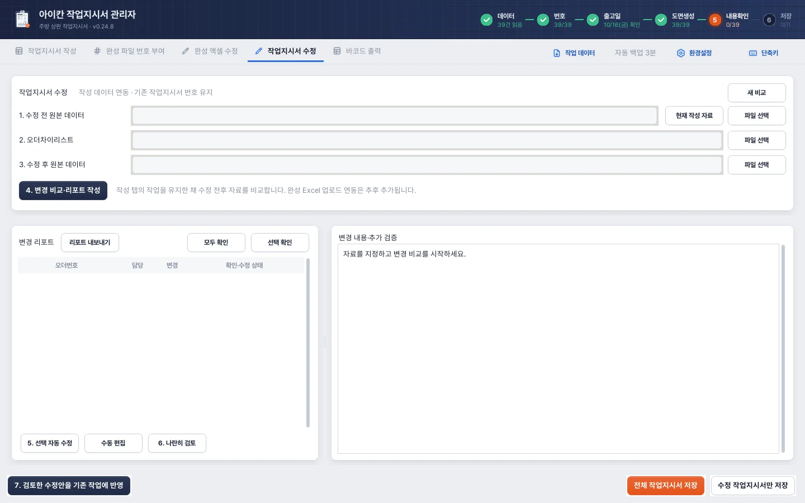
- 11~3 자료수정 전 원본 데이터(또는 현재 작성 자료), 오더차이리스트, 수정 후 원본 데이터를 고릅니다.
- 24. 변경 비교작성 탭의 작업은 그대로 두고 수정 전후를 비교해 리포트를 만듭니다.
- 3변경 리포트주문별 변경과 확인·수정 상태. 리포트 내보내기, 모두 확인, 선택 확인.
- 45 · 6 고치기선택 자동 수정, 수동 편집, 나란히 검토.
- 5변경 내용 · 추가 검증고른 주문의 바뀐 내용을 자세히 봅니다.
- 67. 선택 수정안 반영검토 완료를 체크한 수정안 중 목록에서 고른 것만 반영합니다. 옆의 전체 수정안 반영은 준비한 수정안을 모두 반영합니다.
- 7저장전체 작업지시서 저장 또는 수정한 작업지시서만 저장.
주문자가 수정한 원본을 기존 작성 작업에 반영하는 업무입니다. 비교와 수정안은 별도 보관되며, 기존 작업에 반영하기 전까지 작성본을 덮어쓰지 않습니다. 현재는 작성 데이터 연동 경로를 사용합니다.
1–4. 자료 넣고 비교하기
1. 수정 전 원본 데이터를 선택합니다. 현재 작성 작업의 원본을 쓰려면 현재 작성 자료를 사용합니다.
2. 오더차이리스트를 선택합니다.
3. 수정 후 원본 데이터를 선택합니다.
4. 변경 비교·리포트 작성을 실행합니다.
목록의 변경 건수와 확인·수정 상태를 보고, 오른쪽에서 변경 내용과 추가 검증을 읽습니다. 새 비교를 시작하려면 새 비교를 사용합니다. 작성 탭의 작업은 그대로 두고 비교 자료를 새로 정리합니다.
같은 주문인지 판정하는 방법
기본 연결 기준은 앞 0을 정리한 오더번호입니다. 번호가 바뀌면 같은 영업사원명과 60% 이상 유사한 후보를 찾아 사용자 확인을 요청합니다. 후보를 확인해 같은 주문으로 확인하거나 후보 아님·수정 제외를 선택합니다.
제품명의 HE, [MATT], 대표와 불필요한 공백 차이는 정리해 비교합니다. 오더번호·순번의 앞 0, 연락처의 Excel 서식으로 사라진 앞 0도 의미상 동일한 값으로 처리합니다. 순번 자체의 변경은 핵심 변경으로 강조하지 않습니다. 실제 제작치수·접합·가공 정보의 변경 부분을 구분합니다.
확인하고 수정안 만들기
리포트를 읽고 선택 확인 또는 모두 확인합니다. 경고나 잘못 연결된 후보가 있으면 먼저 해결합니다.
한 개 또는 여러 개를 선택해 5. 선택 자동 수정을 누릅니다. 직접 검토해 고칠 항목은 수동 편집을 사용합니다.
6. 나란히 검토를 누릅니다. 여러 개 선택하면 목록을 넘기며 각각 확인할 수 있습니다.
나란히 검토
왼쪽은 수정 전 읽기 전용, 오른쪽은 수정 후 수정안이며 옆에 변경 리포트가 나옵니다. 오른쪽 번호·표·도면을 더블클릭해 추가 수정할 수 있습니다. 목록 선택 또는 이전/다음으로 이동하고, 각 작업의 검토 완료와 출고일을 확인합니다. 기존 번호는 기본 유지합니다.
| 사례 | 화면과 반영 동작 |
|---|---|
| 일반 수정 | 변경 후 값으로 표를 다시 씁니다. 공백으로 바뀐 내용은 비웁니다. 변경 자체를 취소선으로 남기지 않습니다. |
| 품목 삭제 0.24.9 | 남은 제작사이즈가 위로 당겨지고 빈 줄을 남기지 않습니다. 수량·엣지·뒷턱·접합도 같은 행으로 함께 옮깁니다. 남은 도형의 수동 배치는 행 위치가 바뀌었다는 이유로 초기화하지 않습니다. |
| 품목/수량 추가 | 새 도형을 만들고 한 장에 겹치지 않게 전체 세트를 재배치합니다. 부착 요소와 수기 조립 관계를 보존합니다. |
| 신규 주문 | 왼쪽 신규, 오른쪽 생성 후를 보여줍니다. 도면과 개별 그레이박스 출고일을 준비하고 번호는 직접 확인합니다. |
| 오더 전체 삭제 | 왼쪽 기존 지시서, 오른쪽 오더 삭제 안내입니다. 삭제안의 번호·표·도면은 편집하지 않습니다. |
| 변경 0건 | 실제 변동이 없으면 재확정으로 확인합니다. 차이가 없는 내용의 불필요한 수정은 만들지 않습니다. |
7–8. 기존 작업에 반영하고 저장
준비한 수정안을 한 번에 모두 반영하지 않아도 됩니다. 확인이 끝난 작업만 골라 먼저 반영하고, 나머지는 나중에 같은 방법으로 이어서 반영합니다. 신규 생성·일반 수정·오더 삭제 모두 같은 방식입니다. 0.24.9
6. 나란히 검토에서 반영할 작업마다 이 수정안 검토 완료를 체크합니다.
작업지시서 수정 탭 목록으로 돌아와 반영할 행만 고릅니다. Ctrl+클릭·Shift+클릭으로 여러 행을 고릅니다.
아래의 7. 선택 수정안 반영을 누릅니다. 준비한 미반영 수정안 전체를 반영하려면 전체 수정안 반영을 누릅니다(모두 검토 완료여야 합니다).
작업지시서 작성 탭에서 고른 작업만 바뀌었는지 확인합니다. 고르지 않은 수정안은 대기 상태로 남습니다.
수정 작업지시서만 저장 또는 전체 작업지시서 저장을 사용합니다.
- 고른 대상에 검토 미완료나 적용하지 않은 편집 초안이 있으면 먼저 정리하라고 안내합니다.
- 수정안을 준비한 뒤 기존 작성 내용이나 출고일이 바뀌었다면 다시 준비하라고 안내할 수 있습니다. 바뀐 기존 작업을 오래된 수정안으로 덮어쓰지 않기 위한 확인입니다.
- 고른 한 묶음은 검증을 모두 마친 뒤 반영합니다. 도중에 문제가 나오면 그 묶음의 일부만 먼저 반영하지 않습니다.
- 신규 주문은 추가하고, 확정된 전체 삭제안은 작성 목록에서 제거합니다. 기존 작업지시서 번호는 유지하고 신규 작업의 번호는 기존 절차대로 넣습니다.
- 품목 제한(최대 11품목)은 삭제 후 실제 남는 품목 수로 검사합니다. 삭제 전 내용은 수정 리포트와 수정 전 미리보기에서 볼 수 있습니다.
- 이미 저장한 작성 작업은 열기만으로 빈 줄을 정리하지 않습니다. 0.24.9에서 새 수정안을 만들 때 적용되므로, 이전 수정안에 빈 줄이 남아 있다면 수정안을 다시 준비하세요.
전체 삭제안만 있으면 빈 지시서를 내보내지 않습니다. 비교 진행 상태를 다른 PC에서 이어갈 때는 작업 데이터 저장 옵션의 작업지시서 수정도 포함합니다.
주의 · 품목 삭제 ≠ 주문 전체 삭제
오더차이리스트에 품목-삭제가 있다는 이유만으로 주문 전체를 지우지 않습니다. 수정 전후 원본 대조에서 주문 전체 삭제로 확인한 안을 검토하고 최종 반영할 때 제거합니다.
CHAPTER 16
특이사항과 HTML 수정 리포트
경고 읽기, 목록 이동, 변경 리포트 공유
작성 특이사항 리포트
데이터 읽기·도면 생성 후 나온 주의 내용을 확인합니다. 특이사항 리포트(Ctrl+R)에서는 관련 작업으로 이동해 원본과 표·도면을 점검합니다. 현재 장의 확인 항목 → 크게 보기는 그 장의 안내를 별도 큰 창으로 보여줍니다. ‘주의’가 항상 작업 불가라는 뜻은 아니지만, 누락·미등록 규격·현장타공·지원 초과를 확인하지 않고 넘기지 마세요.
작업지시서 수정의 리포트 내보내기
작업지시서 수정 탭에서 비교를 실행합니다.
리포트 내보내기 → 전체 리포트(HTML) 또는 선택 리포트(HTML)을 고릅니다.
HTML을 저장하고 브라우저에서 엽니다. 검색·명단 바로가기·인쇄로 활용합니다.
| 리포트 구성 | 의미 |
|---|---|
| 날짜 | 수정 후 시공일 기준. 삭제 주문은 수정 전 날짜. 복수 날짜이면 범위를 표시. |
| 파랑 굵게 / 빨강 굵게 | 수정 전 / 수정 후의 실제 달라진 부분만 강조. |
| 오더 삭제 | 전체 삭제를 요약. 불필요한 항목별 상세는 생략. |
| 오더 재확정(변동 없음) | 정상 연결된 주문에 실질 변경이 없음을 요약. |
| 확인 사항 | 차이리스트 불일치 등 중요 사항. 순번 관련 불필요한 정보는 제외. |
| 명단 사이드바 | 스크롤 중 바로가기. 오더차이리스트에 없는 주문은 위쪽에 따로 강조. |
이 HTML은 독립 문서로 전달할 수 있습니다. 프로그램의 편집 상태를 복원하는 파일은 아니므로 작업을 이어갈 사람에게는 .ikanwork를 함께 전달합니다.
CHAPTER 17
인쇄 미리보기와 인쇄
실제 Excel 출력, 매수 제안, 선택 인쇄, 재전송 확인
미리보기 열기
작성 화면 하단 또는 완성 엑셀 수정의 인쇄 미리보기를 누릅니다. 왼쪽 작업 목록·매수, 중앙 확대 출력물, 오른쪽 썸네일을 확인합니다. 실제 Excel의 인쇄 페이지를 준비하므로 최초 생성에는 시간이 걸릴 수 있습니다. 준비 중에는 진행 상태를 보고 중복 클릭을 피합니다.
자동제안 매수
| 가공 조건 | 기본 매수 | 배부 기준 |
|---|---|---|
| 씽크볼 있음 | 6장 | 포장팀·사무실·재단팀·고스라팀·워터잭팀·폴리쉬팀 |
| 쿡탑 또는 타공만 있음 | 5장 | 포장팀·사무실·재단팀·고스라팀·워터잭팀 |
| 씽크볼·쿡탑·타공 없음 | 4장 | 포장팀·사무실·재단팀·고스라팀 |
| 벽체만 있고 엣지 없음 | 3장 | 포장팀·사무실·재단팀 |
| 벽체 엣지 있음 | 4장 | 포장팀·사무실·재단팀·고스라팀 |
| 졸리컷 있음 | 위 매수 +1장 | 졸리컷팀 추가 |
실제 가공 대상만 셉니다. 취소·현장타공으로 제외된 세트는 정상 가공이 있는 것으로 계산하지 않습니다. 제안 이유가 왼쪽에 표시되며 사용자가 수정할 수 있습니다.
매수 변경과 선택 인쇄
왼쪽에서 대상을 한 개 또는 여러 개 선택합니다.
7장/6장/5장/4장/3장 프리셋 또는 1–999 사이의 매수를 입력하고 선택에 매수 적용합니다.
인쇄…를 눌러 인쇄할 작업지시서 선택 창을 엽니다.
사용할 프린터를 고릅니다. 용지·방향·양면·컬러 등을 바꿀 때는 인쇄 설정…을 눌러 그 프린터의 설정 창에서 정하고 확인합니다. 보이는 항목은 프린터 드라이버마다 다릅니다. 0.24.9
설정이 바뀌었으면 버튼이 미리보기 갱신으로 바뀝니다. 눌러서 바뀐 설정으로 페이지를 다시 만듭니다. 이 단계에서는 인쇄를 보내지 않습니다.
갱신된 페이지를 확인한 뒤 인쇄 창을 다시 열고 출력할 작업만 고릅니다. 전체선택 / 선택해제와 Ctrl/Shift 선택을 씁니다.
선택 작업 수와 총 출력 장수를 확인하고 프린터로 인쇄합니다.
매수와 인쇄 설정 보관
- 실제 출력 매수는 작업별 목록의 매수입니다. 프린터 설정 창에서 매수를 바꿔도 목록 매수와 곱하지 않습니다. 예: A 6장 + B 3장을 고르면 총 9장, 고르지 않은 C는 보내지 않습니다.
- 인쇄 설정은 지금 연 미리보기 창에서 프린터별로 기억합니다. 다른 미리보기 창을 열거나 프로그램을 다시 켜면 남지 않습니다.
- 프린터 설정 창에서 취소하면 직전 설정을 유지합니다. 기본값은 이 창에서 정한 프린터별 설정을 지우고 기존 인쇄 경로로 돌아갑니다(이때도 미리보기를 갱신합니다).
- 용지 설정 등으로 갱신이 실패하면 이전 미리보기를 유지합니다. 인쇄 창을 다시 열어 설정을 고치거나 기본값을 고른 뒤 다시 갱신하세요.
- Windows 기본 프린터나 시스템에 저장된 프린터 설정은 바꾸지 않습니다. 미리보기에서 표·번호·도면을 고친 뒤에도 적용 중인 인쇄 설정으로 페이지를 다시 만듭니다.
프린터를 바꾸면 먼저 새 프린터 기준으로 미리보기를 갱신합니다. 선택한 작업만 지정 매수만큼 한 묶음으로 전송합니다. 이 기능은 작업지시서 작성과 완성 엑셀 수정의 인쇄 미리보기에서 같습니다.
중복 오더번호 확인 0.24.9
Excel로 저장하거나 미리보기에서 인쇄할 때, 이번에 실제로 저장·인쇄할 대상에 같은 오더번호가 둘 이상 있으면 중복 오더번호 확인 창이 한 번 뜹니다. 창에는 중복 오더번호와 작업지시서 수가 나옵니다.
| 선택 | 동작 |
|---|---|
| 예 | 중복을 포함해 지금 선택과 매수 그대로 저장·인쇄 |
| 아니요 | 이번 저장·인쇄만 취소. 목록과 작업 내용은 그대로 |
- 앞자리 0은 빼고 비교합니다.
0312966489와312966489,00042와42는 같은 오더번호입니다. - 이번 출력 대상 밖의 작업은 검사하지 않습니다. 한 작업지시서를 6장 인쇄하는 것은 매수이므로 중복이 아닙니다.
- 기준은 오더번호(D6)입니다. 작업지시서 번호(K1)가 같은지 보는 검사와는 별개입니다.
- 완성 엑셀 수정의 저장, 완성 파일 번호 부여 후 저장에서도 실제 결과 파일의 작업지시서를 검사합니다.
- 예를 눌러도 중복을 자동으로 합치거나 지우지 않습니다. 필요하면 아니요로 취소한 뒤 목록이나 선택 범위를 고치세요.
미리보기에서 바로 수정
중앙 페이지의 작업지시서 번호 / 상단 표 / 도면을 더블클릭하면 해당 편집 창이 열립니다. 수정 후 미리보기를 갱신하고 검토를 마칩니다. 원래 작업 화면을 별도로 바꿨다면 오래된 미리보기를 닫고 다시 여는 것이 안전합니다.
전송 상태와 추가 출력
목록에 전송 매수 또는 확인 필요가 표시됩니다. 이미 전송한 작업을 다시 인쇄하면 추가 인쇄 확인이 나옵니다. 오류가 나면 자동 재전송하지 않습니다. 프린터 대기열과 종이 출력 상황을 확인하고 필요한 작업만 다시 보내세요.
참고 · 전송 완료와 실제 종이 출력
프로그램의 완료는 프린터로 보냈다는 뜻입니다. 용지 부족·걸림·드라이버 문제까지 보장하지 않습니다. 전송 상태와 실제 나온 장수를 함께 확인하세요. 기본 프린터 설정을 이 기능이 임의로 바꾸지는 않습니다.
CHAPTER 18
바코드 출력 시작하기
자료 유형, 번호, PDF 연결, 정리, 미리보기
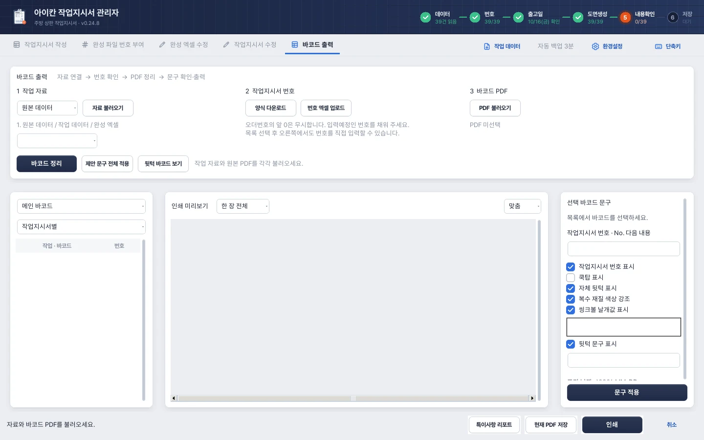
- 11 작업 자료원본 데이터 · 작업 데이터 · 완성 엑셀 중 하나를 골라 자료 불러오기.
- 22 작업지시서 번호양식 다운로드 · 번호 엑셀 업로드. 오더번호 앞의 0은 무시합니다.
- 33 바코드 PDF원본 바코드 PDF를 불러옵니다.
- 4바코드 정리자료와 PDF를 짝지어 정리하고, 제안 문구 전체 적용, 뒷턱 바코드 보기.
- 5바코드 목록메인 바코드/뒷턱, 작업지시서별로 나누어 봅니다.
- 6인쇄 미리보기한 장 전체 또는 한 칸씩, 맞춤 배율로 확인합니다.
- 7선택 바코드 문구번호 · 쿡탑 · 자체 뒷턱 · 복수 재질 · 씽크볼 날개값 · 뒷턱 문구 표시를 켜고 끄고 문구 적용.
- 8출력특이사항 리포트, 현재 PDF 저장, 인쇄.
입력 자료 선택
| 자료 유형 | 필요한 준비 | 연결되는 정보 |
|---|---|---|
| 원본 데이터 | 원본 Excel + 필요시 번호 Excel | 원본 품목·가공·지역·날짜. 번호는 업로드 또는 직접 입력. |
| 작업 데이터 | 적용된 작성/완성 수정 상태가 담긴 .ikanwork | 현재 적용된 도면/표와 번호. 두 종류가 있으면 대상 선택. |
| 완성 엑셀 | 완성 Excel + 해당 원본 데이터 | 완성 표·번호와 실제 도형 상태를 원본 품목에 연결. |
기본 순서
1 작업 자료에서 원본 데이터/작업 데이터/완성 엑셀 중 하나를 고르고 자료 불러오기를 누릅니다. 완성 엑셀 방식에서는 원본 데이터도 선택합니다.
2 작업지시서 번호에서 필요하면 양식 다운로드 → 번호 엑셀 업로드로 입력예정 번호를 채웁니다. 목록 선택 후 오른쪽에서도 직접 입력할 수 있습니다.
3 바코드 PDF → PDF 불러오기에서 원본 PDF를 선택합니다. 여러 PDF는 선택한 파일 순서를 유지합니다.
바코드 정리를 누릅니다. 자료와 바코드가 다른 부분은 특이사항 리포트를 확인합니다.
제안 문구 전체 적용으로 전체 바코드의 검증된 제안을 적용/복원합니다.
미리보기와 개별 문구를 확인하고 각 결과 PDF를 저장하거나 인쇄합니다.
목록과 미리보기
왼쪽 출력 종류에서 메인 바코드 / 뒷턱 바코드 / Z 분할 바코드 / 표지를 선택합니다. 목록 묶음은 작업지시서별 / PDF 원본별로 바꿀 수 있습니다.
중앙은 한 장 전체 / 선택 바코드 보기와 맞춤·1.5배·2배·3배를 지원합니다. 페이지에 보이는 바코드 조각을 클릭하면 해당 조각이 선택되고 오른쪽 옵션에서 편집할 수 있습니다. 뒷턱 바코드 보기로 별도 결과에 바로 이동할 수 있습니다.
참고 · 바코드 연결을 확인하세요
바코드의 상판 한 개를 원본의 오더·순번 또는 유일한 제품·치수에 연결합니다. 비슷한 항목이 반복되어 모호한 경우 임의로 합치지 않습니다. 원본 날짜가 맞는지, 최종 적용한 작업 데이터를 썼는지 확인합니다.
CHAPTER 19
바코드 자동 문구와 개별 편집
번호·쿡탑·날개값·뒷턱·Z 분할·재질 강조
자동제안되는 표시
| 대상 | 표시 내용 |
|---|---|
| 작업지시서 번호 | 위쪽 두 조각은 우상단, 아래 두 조각은 우하단에 붉은 굵은 번호. 같은 주문의 번호 변경은 복제까지 연동. |
| 쿡탑이 있는 상판 | 중앙에 붉은 쿡탑 문구. 취소/현장타공·실제 삭제가 검증된 대상은 제외. |
| 씽크볼이 있는 상판 | 날개값이 같거나 한 값이면 17mm처럼 한 값. 다르면 좌우/상하 제목과 각각의 숫자를 짧은 줄 간격으로 표시. 씽크볼이라는 단어는 추가하지 않음. |
| TB로 시작하는 자체 뒷턱 | 해당 조각 중앙에 뒷턱 문구. |
| 부착 뒷턱 | 작업지시서당 첫 바코드를 1장 복제. 치수 세 곳에 굵은 붉은 취소선, 뒷턱(n개)와 전체 부착 뒷턱 치수, 우하단 초록 번호. |
| Z 분할 상판 | 원본 세로값 3곳을 붉게 취소하고 첫 깊이를 메인에, 둘째 깊이를 별도 복제에 표시. 중앙에도 각 가로*분할깊이 표기. |
| 복수 재질 | 작업지시서에서 확인한 재질별 색 계열로 바코드의 한글 재질명을 보통 위아래 두 곳 강조. 검정 글씨와 원본 바코드는 유지. |
| 표지 | 지역·날짜별 한 장. 날짜는 그레이박스 출고일 +1영업일. 지역과 날짜를 수기 수정 가능. |
메인 PDF는 원본 파일·페이지·조각 순서를 유지하고 옅은 회색 십자 절취선을 넣습니다. 뒷턱·Z 둘째 조각은 메인에 끼우지 않고 별도 출력합니다. 실제 치수 위치나 분할 숫자가 모호하면 추정하지 않고 리포트에 남깁니다.
개별 문구 수정
왼쪽 목록 또는 미리보기에서 바코드를 선택합니다.
오른쪽에서 번호 표시, 쿡탑, 자체 뒷턱, 복수 재질 색상, 씽크볼 날개값, 뒷턱 문구 등의 표시를 선택합니다.
날개값/뒷턱 문구와 추가 문구를 수정합니다. 추가 문구는 300자 이내이며 위쪽/중앙/아래쪽, 색, 글자 크기를 지정할 수 있습니다.
문구 적용을 누르고 미리보기를 확인합니다.
표지를 선택한 경우 지역명·표지 날짜(YYYY-MM-DD)·추가 문구를 고칩니다. 조각별 옵션은 그 바코드에만 적용되지만 작업지시서 번호는 같은 오더에 공유됩니다.
주의 · 전체 적용은 수동 문구를 초기화합니다
제안 문구 전체 적용은 전체 바코드의 수동 문구를 원본 제안으로 바꿉니다. 번호는 유지합니다. 수동 편집 후 다시 정리하거나 전체 적용할 때 확인창을 읽으세요.
문구가 안 붙는 경우
작업 자료와 원본 PDF를 다시 연결하고 바코드 정리를 실행한 뒤 전체 제안을 적용합니다. 완성 엑셀 방식에서는 번호만 읽히는 것과 상판 가공까지 연결되는 것이 다릅니다. 같은 날짜의 원본 데이터인지, 가공 취소/현장타공인지, 연결이 모호하다는 리포트가 있는지 확인하세요. 재질 강조는 시트 탭색을 재질색으로 추정하지 않습니다.
CHAPTER 20
바코드 PDF 저장·인쇄
결과 종류별 저장, 페이지 범위, Windows 인쇄 설정
PDF 보관
현재 PDF 저장은 지금 선택한 출력 종류의 결과를 저장합니다. 메인·뒷턱·Z 분할·표지가 필요하다면 종류를 바꾸어 각각 저장합니다. 원본 바코드 PDF는 유지합니다. 다른 자료를 읽거나 결과를 다시 만들기 전에 필요한 PDF를 저장하세요.
바로 인쇄
인쇄를 누릅니다.
출력할 종류를 체크합니다. 기본 선택은 현재 출력 종류이며 페이지 기본 범위는 전체 페이지입니다.
프린터와 매수를 정합니다. 인쇄 설정…에서 선택 프린터의 용지·방향·양면·컬러 등 Windows 인쇄 설정을 열 수 있습니다.
일부만 출력하려면 페이지 지정을 선택하고 각 PDF별 범위를 입력합니다.
선택 종류·범위·매수를 확인하고 인쇄합니다.
| 입력 예시 | 뜻 |
|---|---|
| 전체 | 해당 종류의 전체 페이지 |
| 1-6 | 1~6페이지 |
| 1,2,3,4 | 나열한 페이지 |
| 1-3,5,7-8 | 범위와 개별 번호 혼합 |
페이지 번호는 각 결과 PDF의 1페이지부터 시작합니다. 중복 입력은 한 번만 처리하고, 입력 순서와 관계없이 원본 페이지 순서로 인쇄합니다. 존재하지 않는 페이지/잘못된 범위는 인쇄 전 확인합니다. 부분 인쇄만 한 결과를 전체 완료로 보지 않습니다.
프린터 설정은 이 인쇄 작업에 적용하며 시스템 기본 프린터를 바꾸지 않습니다. 설정을 취소하면 직전값을 유지합니다. 원본 순서 확인이 중요한 업무이므로 출력 종류별로 나온 종이를 구분해 모으세요.
CHAPTER 21
작업 데이터 저장·이어하기
선택 저장, 다른 PC로 전달, 초안과 포함 범위
저장하기
상단 작업 데이터 → 작업 데이터 저장을 누릅니다.
저장 옵션에서 작업지시서 작성 / 완성 엑셀 수정 / 작업지시서 수정 중 포함할 작업을 선택합니다.
작성/완성 수정은 전체 또는 현재 목록에서 선택한 작업만 저장합니다. 수정 비교는 비교 자료·리포트·수정안·확인 상태를 포함합니다.
.ikanwork파일명과 저장 위치를 정합니다.
완성 엑셀 수정 상태를 넣으면 편집에 필요한 완성 원본도 함께 담으므로 파일이 커질 수 있습니다. 작성 상태의 원본 경로가 다른 PC에서 없어도 저장한 표·도면으로 이어갈 수 있지만, 원본 재읽기와 추가 검증을 하려면 원본 Excel도 별도로 준비합니다.
다른 PC에서 열기
상대 PC에 같은 버전 또는 호환되는 최신 관리자를 설치합니다.
작업 데이터 → 작업 데이터 열기에서 파일을 엽니다.
현재 작업을 닫고 열지 확인합니다. 현재 작업을 남길 필요가 있으면 먼저 저장합니다.
목록·번호·도면·개별 출고일·검토·초안을 확인하고 이어서 작업합니다.
최신 기능을 사용한 파일은 최소 버전을 요구할 수 있습니다. 더 새 프로그램이 필요하다는 메시지가 나오면 업데이트합니다. 손상·무결성 검사 실패는 원본을 다시 복사하거나 다른 백업을 사용합니다.
에디터의 미적용 초안
에디터의 Ctrl+S로 저장한 미적용 편집은 초안으로 들어갑니다. 다시 열어 편집할 수 있지만, 초안을 적용하지 않으면 최종 Excel/인쇄에 쓰지 못하게 막는 경우가 있습니다. 최종 반영할 도면은 반드시 에디터에서 적용하세요.
참고 · 저장과 열기는 대상 범위를 바꿉니다
선택한 작업만 저장한 파일을 열면 그 파일에 담긴 작업만 열립니다. 전체 업무를 유지한 채 상대 작업을 덧붙이려면 다음 장의 합치기/데이터 통합을 사용합니다.
CHAPTER 22
동료 작업 합치기·데이터 통합
분담 작업을 합치기와 서로 다른 원본을 통합하기
동료 작업 합치기: 같은 원본을 분담할 때
같은 기준의 전체 작업을 준비하고 원본/초기 작업 데이터를 보관합니다.
동료끼리 맡을 주문 범위를 정해 각자 편집합니다.
각자 전체 또는 담당 작업만 작업 데이터로 저장합니다.
모으는 PC에서 기준 작업을 열고 작업 데이터 → 동료 작업 합치기를 실행합니다.
같음·추가·받은 작업 반영·양쪽 수정 등 상태와 받을 항목을 확인하고 선택한 작업 합치기를 누릅니다.
합친 후 목록과 도면을 확인하고 새 작업 데이터로 저장합니다.
두 사람이 같은 주문을 고쳤거나 원본 품목 자체가 다르면 자동으로 한쪽을 추정하지 않습니다. 선택한 받은 상태로 교체되는 범위를 확인하세요. 필요할 때 전체 날짜, 수정 비교 상태, 다른 완성 원본 교체 등의 옵션도 점검합니다.
직전 합치기 되돌리기는 바로 이전 합치기 전 상태로 되돌립니다. 합친 뒤 추가 작업이 있었다면 되돌리기 전에 저장하세요.
데이터 통합: 서로 다른 원본 작업을 한 목록에
작업 데이터 → 데이터 통합은 다른 원본을 가진 .ikanwork의 작성 상태를 현재 작성 목록에 합칩니다. 새 주문은 추가하고, 겹치는 주문은 현재/받은 버전 중 사용할 쪽을 명시적으로 선택합니다. 번호·수동 도면·개별 날짜·초안을 유지합니다.
이 메뉴는 현재 완성 엑셀 수정이나 수정 비교를 임의로 덮지 않습니다. 완성 Excel끼리 합치려면 완성 엑셀 수정 → 데이터 통합을 사용합니다.
주의 · 공동작업의 현재 방식
현재는 파일을 주고받아 합치는 방식입니다. 대표 PC 서버에 자동 연결하는 실시간 공동 편집·자동 번호 분배·동시 작업 잠금은 현 버전의 기능으로 안내하지 않습니다. 같은 주문을 동시에 편집하지 않도록 담당 범위를 먼저 정하세요.
CHAPTER 23
환경설정과 자동 백업
주기·보관 개수·복원·비정상 종료 복구
자동 백업 설정
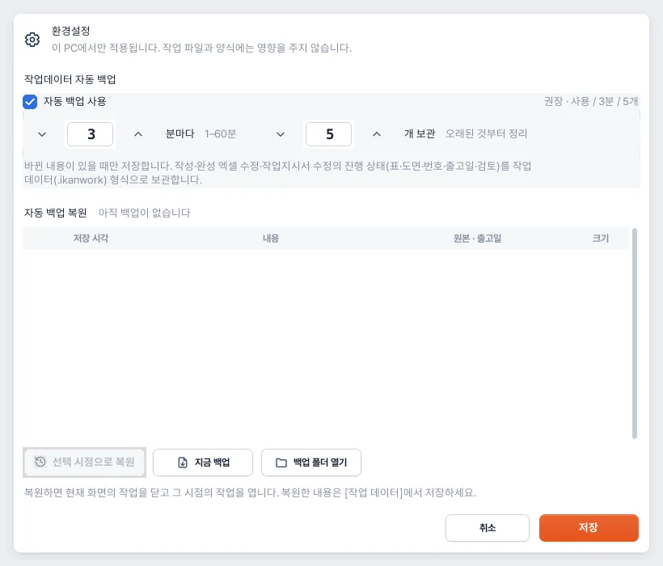
- 1자동 백업 사용기본값은 사용 · 3분 · 5개(권장). 1~60분, 1~30개 사이로 바꿀 수 있습니다.
- 2자동 백업 복원목록에서 시점을 골라 선택 시점으로 복원. 지금 백업, 백업 폴더 열기.
- 3저장바꾼 설정은 저장을 눌러야 적용됩니다.
상단 환경설정에서 자동 백업을 켜거나 끕니다. 기본값은 사용 / 3분 간격 / 최근 5개이며 간격 1–60분, 보관 1–30개 범위에서 바꿀 수 있습니다. 바뀐 내용이 있을 때만 보관하며, 처리 중에는 안전한 다음 시점으로 미룹니다.
백업은 표 입력을 강제로 확정하거나 편집 창을 닫지 않는 중간 저장입니다. 아직 에디터에서 작업 데이터 초안으로 보관하지 않은 실시간 편집까지 모두 저장됐다고 가정하지 마세요. 중요한 중간 단계는 에디터 Ctrl+S 또는 작업 데이터 저장으로 남깁니다.
복원하기
환경설정 → 자동 백업 복원 목록에서 날짜와 건수를 봅니다.
원하는 시점을 선택해 선택 시점으로 복원하거나 목록을 더블클릭합니다.
현재 작업을 닫고 해당 시점으로 돌아갈지 확인합니다.
복원 내용을 확인하고 작업 데이터 저장으로 원하는 위치에 새로 저장합니다.
비정상 종료 후 다음 실행 때 복원을 제안할 수 있습니다. 그때 아니요를 눌러도 환경설정에서 나중에 복원할 수 있습니다.
보관 위치와 한계
설치판 백업은 현재 Windows 사용자의 %LOCALAPPDATA%\IkanWorkorders\workdata\autosave에 저장합니다. 백업 폴더 열기로 확인합니다. 오래된 백업은 설정 개수를 초과하면 정리되므로 장기 보관 파일은 별도 위치로 복사하세요.
참고 · 다른 PC에도 별도로 보관하세요
자동 백업은 이 PC 안의 복구 수단입니다. PC/디스크 자체의 문제에 대비하려면 업무가 끝난 작업 데이터·Excel·PDF를 회사에서 정한 별도 보관 위치에 저장합니다.
CHAPTER 24
자동입력 규칙 참고
재질, 뒷턱, 지역·전화번호, 표 확장과 지원 범위
아래는 결과를 검토할 때 알아둘 핵심 규칙입니다. 사용자가 현재 값을 수정한 경우에는 적용된 표·도면도 함께 확인합니다.
부착 뒷턱 치수는 어떻게 계산하나요?
구분자가 T로 시작하고 N을 포함하지 않는 대상에 적용하되 TB 자체 뒷턱과 TPUB 계열은 제외합니다. 일반은 가로×50, 코너 C는 가로×50과 두 번째 치수(세로)×50을 사용합니다. 예: TCDUW (1840*660*0*700 R) → 1840*50, 660*50. 네 번째700은 부분엣지 해석용이며 코너 뒷턱 길이가 아닙니다.
TBW 자체 파츠는 제작사이즈에 초록 글씨로 적고 별도 부착 뒷턱 목록으로 다시 만들지 않습니다. 부착 뒷턱이 모두 없으면 검정 X 한 번만 표시합니다.
재질 강조와 이름 변환
제품명에서 재질을 찾아 등록된 영문명으로 바꿉니다. 단어 중간 공백 유무도 정리해 색인합니다. 두 가지 이상이면 강조 문구를 나누고, 제작사이즈 목록과 도형 안 영문명을 같은 색으로 연결합니다. 단일 재질에는 불필요한 도형 안 중복 표시를 만들지 않습니다.
미등록 재질은 임의 영문으로 추정하지 않고 확인합니다. 색상표/규격표의 신규 등록이 필요하면 현재 데이터와 정확한 명칭·치수로 업데이트를 요청합니다.
씽크볼과 쿡탑 규격 조회
기존 규격표를 기준으로 씽크볼 날개·가로/세로·R과 일반/코너 전면값, 쿡탑 타공규격·전면값을 자동 조회합니다. 씽크볼 전면값은 해당 상판 구분자의 W/C(코너 C)를 구분합니다. CSQ816B는 CSQ816과 같은 규격으로 취급합니다.
0.24.7부터 HS514MD·HS524MD와 HS523E WH의 560×480·5R·전면70mm가 반영되어 있습니다. HS523E와 기존 HS523YD는 다른 모델입니다. 모델을 비슷하다는 이유로 바꿔 쓰지 마세요.
오더번호·담당·연락처
오더번호의 앞 0은 정리하며 출력 D6는 일반 서식을 사용합니다. 담당이 정확히 허**석인 경우 허현석으로 치환합니다. 다른 가림 이름을 임의로 추정하지 않습니다. 전화번호에 하이픈이 없으면 02·070·031·010 등 길이에 맞춰 표시하되 원본이 잘못된 경우 직접 확인합니다.
기본 시트명은 담당 이름이며, 같은 이름이 겹치면 (1), (2) 등으로 구분하고 리포트로 알립니다. 번호를 시트명 뒤에 임의로 붙이지 않습니다.
출력 양식과 지원 범위
- 주문 한 건은 한 장에 담도록 배치합니다. 품목 수에 따라 제작사이즈를 최대11품목까지 확장하며 상단 타공 블록 수에 따라 아래 영역도 이동합니다.
- R/U 표시는 제목을 제외하고 14pt로 고정하는 양식 규칙이 있습니다. 도면의 보조수치 16pt 규칙과 다른 영역입니다.
- 기본과 추가 타공 블록은 씽크볼2+쿡탑2까지입니다. 넘는 경우 임의 누락하지 않고 지원 초과로 안내합니다.
- 출력 글꼴은 맑은 고딕을 기준으로 합니다. 좌표 고정·그룹을 사용해 화면과 인쇄의 밀림을 줄입니다.
- 계산용 X5:AB19는 수식과 함께 유지하며, 수기도면 오른쪽 재료는 인쇄영역 밖에 남깁니다.
CHAPTER 25
단축키 모음
작성 화면, 에디터, 번호 입력, 검토 이동
작성 화면
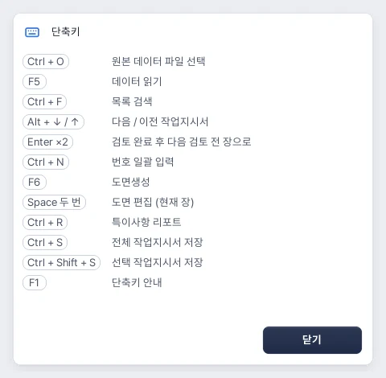
| 단축키 | 동작 |
|---|---|
| Ctrl+O / F5 | 원본 파일 선택 / 데이터 읽기 |
| Ctrl+F | 목록 검색 |
| Alt+↓ / Alt+↑ | 다음 / 이전 작업지시서 |
| Ctrl+N | 번호 일괄 입력 |
| F6 | 도면생성 |
| Space 빠르게 두 번 | 현재 도면 편집 |
| Enter 빠르게 두 번 | 내용확인 후 다음 검토 전 작업 |
| Ctrl+R | 특이사항 리포트 |
| Ctrl+S | 전체 작업지시서 Excel 저장 |
| Ctrl+Shift+S | 선택 작업지시서 Excel 저장 |
| Ctrl+Shift+↑ / ↓ | 작성/완성 수정 목록에서 선택 시트 순서 이동 |
| F1 | 단축키 안내 |
도면 에디터
| 단축키/마우스 | 동작 |
|---|---|
| Enter 빠르게 두 번 | 편집 적용 |
| Ctrl+S | 편집 초안과 작업 데이터 저장 옵션. Excel 저장 단축키와 구분 |
| Ctrl+Z / Ctrl+Y | 되돌리기 / 다시 실행 |
| Ctrl+C / Ctrl+V / Ctrl+X | 복사 / 붙여넣기 / 잘라내기 |
| Ctrl+D | 복제 |
| Delete / Backspace | 선택 요소 삭제. 상판 조각 자체는 제외 |
| Ctrl+A | 전체 선택 |
| Ctrl+G / Ctrl+Shift+G | 그룹 / 그룹 해제 |
| Ctrl+L | 제자리/타공 세트 잠금 전환 |
| R / Shift+R | 오른쪽 / 왼쪽90° 회전 |
| Shift+H / Shift+V | 좌우 / 상하 뒤집기 |
| Ctrl+] / Ctrl+[ | 맨 앞으로 / 맨 뒤로 |
| 방향키 / Shift+방향키 | 1pt / 10pt 이동 |
| Ctrl+0 / Ctrl++ / Ctrl+- | 화면 전체 맞춤 / 확대 / 축소 |
| Space+드래그 / 가운데 버튼 드래그 | 화면 이동 |
| Ctrl+휠 / Shift+휠 | 화면 확대 / 가로 스크롤 |
| Alt+드래그 | 스냅 잠시 해제 |
| T | 기본 글자 재료 생성 |
입력/검토 창
| 상황 | 단축키 |
|---|---|
| 에디터 문구 직접 입력 | Enter 완료 / Shift+Enter 줄바꿈 / Esc 취소 |
| 완성 파일 번호 칸 | Enter·Tab 다음 행 / Shift+Tab 이전 행 / Esc 현재 입력 취소 / F2 편집 |
| 작성 번호 일괄 입력 | Enter·↓ 다음 칸 / ↑ 이전 칸 |
| 수정안 나란히 검토 | Alt+← / Alt+→ 이전/다음 작업 |
참고 · 입력 중에는 일반 글자 입력이 우선
빠른 두 번 누르기는 키를 떼었다 다시 누릅니다. 키를 누르고 있는 자동 반복과는 다릅니다. 입력창·다른 모달창에서는 업무 단축키를 제한하며, 글자를 쓰는 중 Enter는 해당 입력 확정으로 동작할 수 있습니다.
CHAPTER 26
문제 해결과 업무 체크
원인별 조치, 파일 손실·중복 출력을 줄이는 확인 순서
자주 묻는 문제
| 상황 | 확인/조치 |
|---|---|
| 데이터가 덜 보임 | 검색어와 전체/검토 전/번호 없음/주의 필터를 확인합니다. 다시 읽기가 필요한 상태인지 봅니다. |
| 파일을 골랐는데 내용이 이전과 같음 | 파일 선택 후 데이터 읽기를 실행했는지 확인합니다. 중요한 기존 편집은 먼저 작업 데이터로 저장합니다. |
| 저장 버튼에서 날짜/번호 오류 | 전체 날짜 확인 또는 개별 출고일, 각 주문의 K1 번호, 미적용 도면 초안을 확인합니다. |
| 도형·세트가 움직이지 않음 | 자동 타공 수정 잠금 또는 제자리 잠금인지 확인하고 옵션/Ctrl+L로 풉니다. 그룹 안 요소는 더블클릭합니다. |
| 적용이 안 됨 | 도면 영역 밖 문구·화살표가 없는지 확인합니다. 전체 배율/자동맞춤 또는 수동 이동으로 안에 정리합니다. |
| 업데이트해도 저장된 도면이 이전과 같음 | 기존 도면은 보존합니다. 새 규칙이 필요하면 해당 작업을 명시적으로 재생성하되 수기 편집을 먼저 보관합니다. |
| 규격이 없거나 다른 상판이라고 경고 | 모델명·원본 행·실제 배정 상판을 확인합니다. 다른 상판에 코드만 골라 강제로 적용하지 않습니다. |
| 나란히 검토가 진행 안 됨 | 원본 확인→수정안 준비→나란히 검토 순서를 확인합니다. 변경0은 재확정일 수 있습니다. 날짜/원본 연결 경고를 읽습니다. |
| 현재 작성 품목과 수정 전을 연결 못함 | 같은 시점의 원본인지 확인합니다. 서로 다른 일자의 품목을 추정 연결해 반영하지 않습니다. |
| 미리보기 준비가 오래 걸림 | 실제 Excel 페이지를 준비합니다. 진행 상태와 취소를 확인하고 중복 실행하지 않습니다. 파일 잠금/Excel 대화상자도 확인합니다. |
| Excel 저장 실패 | Excel 데스크톱 설치, 같은 파일을 열어 둔 상태, 저장 위치 권한, 디스크 공간, 기존 파일명 충돌을 확인하고 새 이름으로 시도합니다. |
| 프린터 전송 오류 또는 매수 불명확 | 프린터 대기열과 실제 나온 장수를 확인합니다. 자동 재전송하지 않으므로 확인 후 필요한 작업만 다시 보냅니다. |
| 바코드 번호만 붙고 가공 문구가 없음 | 연결한 원본의 날짜/품목, 취소/현장타공 여부, 특이사항 리포트를 확인하고 바코드 정리→제안 문구 전체 적용을 실행합니다. |
| 바코드 색상 강조가 일부 없음 | 실제 복수 재질 색상과 한글 재질명 위치가 검증되어야 합니다. 시트 탭색은 재질색이 아닙니다. 위치/색 경고를 확인합니다. |
| 작업 데이터가 열리지 않음 | 프로그램 요구 버전과 무결성 오류를 확인합니다. 파일을 다시 전달받거나 자동 백업/다른 보관본을 사용합니다. |
| 설치 중 바로가기 속성 경고1946 | 최신 MSI를 사용합니다. 최신판은 문제가 된 바로가기 추가 속성 쓰기를 제외했습니다. 계속되면 경고 전체와 설치 버전을 기록해 문의합니다. |
저장·인쇄 전 최종 확인
- 원본 데이터의 날짜·목록 범위가 맞는가?
- 그레이박스 출고일과 개별 날짜가 확정됐는가?
- 오더번호와 작업지시서 번호를 구분해 확인했는가?
- 제작사이즈·수량·재질·엣지·뒷턱·접합이 맞는가?
- 씽크볼·쿡탑이 각각 올바른 상판에 붙었는가?
- 현장타공/취소 표시와 수기도면 조립 완료가 맞는가?
- 도면 글자와 선이 겹치거나 밖으로 나가지 않는가?
- 실제 인쇄 미리보기에서 한 장과 매수를 확인했는가?
- 최종 Excel/PDF와 이어갈 작업 데이터를 각각 보관했는가?
오류를 문의할 때 함께 전달할 것
프로그램 버전, 어느 탭에서 누른 버튼, 대상 담당/오더번호, 사용한 원본·완성 파일·PDF 이름, 오류 문구 전체, 가능하면 같은 현상이 재현되는 작업 데이터 사본을 준비합니다. 실제 사용자 원본은 별도로 보관합니다.
CHAPTER 27
용어와 기능 범위
파일 이름, 현재 지원 기능과 계획 기능 구분
| 용어 | 뜻 |
|---|---|
| 시공일 | 원본의 공장출고일로 읽는 고객 시공 기준일 |
| 그레이박스 출고일 | 제조업체가 물류창고 출고를 목표로 잡는 날. 기본 시공일−1영업일 |
| 오더번호 | 원본과 완성 파일, 바코드를 잇는 주문 식별자. D6 |
| 작업지시서 번호 | 사내에서 부여하는 번호. K1의 No. 뒤 내용 |
| 제작사이즈 / 조각 | 제작할 품목의 실제 규격 / 그 품목 수량에 대응하는 도면 도형 |
| 구분자 | 제품명 안의 영문 코드. 예: TWDN, TPUBW, PPS, TBW |
| 좌시작 / 우시작 | 상판 왼쪽/오른쪽에서 타공 시작점까지의 거리 |
| 좌센터 / 우센터 | 상판 왼쪽/오른쪽에서 쿡탑 중앙까지의 거리 |
| 전면값 | 상판 전면부에서 타공까지의 위치값 |
| 날개값 | 씽크볼 좌우·상하의 날개 규격 |
| 부분엣지 | 변 전체가 아니라 지정한 구간만 엣지를 하는 가공 |
| 부착 뒷턱 / TBW | 상판에서 계산한 부착 뒷턱 / 독립된 자체 뒷턱 파츠 |
| 초안 / 수정안 | 아직 도면에 적용하지 않은 편집 / 아직 기존 작성본에 반영하지 않은 주문 변경 제안 |
| 내용확인 / 검토 완료 | 현재 출력 내용을 확인한 상태 / 주문 변경 수정안을 검토한 상태 |
현 버전에서 별도로 구분할 사항
- 규격 자동 조회와 표/에디터의 수기 수정은 지원하지만, 모든 규격을 자유롭게 추가·편집하는 독립 규격 관리 탭은 현 화면에 없습니다.
- 고정 매수 프리셋(3–7장)과 직접 매수 입력은 지원합니다. 사용자가 이름 붙인 인쇄 버튼 프리셋을 영구 등록하는 관리 기능과는 구분합니다.
- 공동작업은 작업 데이터 전달·합치기·통합 방식입니다. 서버 기반 실시간 공동관리 기능은 포함하지 않습니다.
- 작업지시서 수정의 주문 변경 반영은 작성 데이터와 연동합니다. 완성 Excel에 오더차이리스트를 자동 반영하는 별도 경로와 혼동하지 마세요.
- 포장 카운트는 별도 프로그램입니다. 이 매뉴얼은 아이칸 작업지시서 관리자0.24.9의 기능을 다룹니다.
문서 기준: 현재0.24.9의 실제 탭·버튼·처리 경로와 최신 개발 규칙. 오래된 버전의 화면/버튼 문구는 다를 수 있습니다. 설명에 등장하는 이름·날짜·치수는 사용 방법을 위한 예시입니다.
아이칸 작업지시서 관리자 사용 설명서 · 기준 버전 0.24.9 · 정리 2026-10-28 · 주식회사 아이칸 사내용